마케팅의 네 갈래와 바뀐 역할
강의는 한 문장으로 시작해요. 무엇이든 만들 수 있는 세상에서는 유통, 즉 '어떻게 알리고 팔까'가 왕이라는 거예요. 알리바바와 인터넷이 실물 제품 생산의 문을 열었듯, AI는 소프트웨어 제작의 문을 열었어요. 남은 장벽은 취향, 유통, 그리고 사람들의 주목이에요. 그래서 마케팅이 지금 가장 많이 찾고 가장 많이 뽑는 기술이 됐다고 발표자는 말해요.
발표자 오렌(Oren)은 콘텐츠 크리에이터이자 브랜드 운영자예요. 퍼포먼스 마케팅 에이전시 Dark Room의 파트너이기도 해요. 강의는 포지셔닝과 메시지 → 수요(소셜, 광고, 크리에이터) → 관심을 매출로 바꾸는 전술(퍼널, 랜딩 페이지) → 내러티브(캠페인, 이메일, 영업 지원, 사내 소통) 순서로 흘러가요.
마케팅을 이루는 네 갈래와 운영
먼저 흔히 말하는 마케팅의 네 갈래를 정리해요. 아래 슬라이드에서 왼쪽 아래 사람 셋 위의 'PRODUCT'·'BRAND', 위쪽의 'DEMAND GEN'·'CONTENT'가 그 넷이에요. 오른쪽 아래 'OPS' 밑의 아이콘 셋은 AI 도구들로, 운영 영역이 이제 이런 도구로 시스템을 묶는 일이라는 뜻이에요.
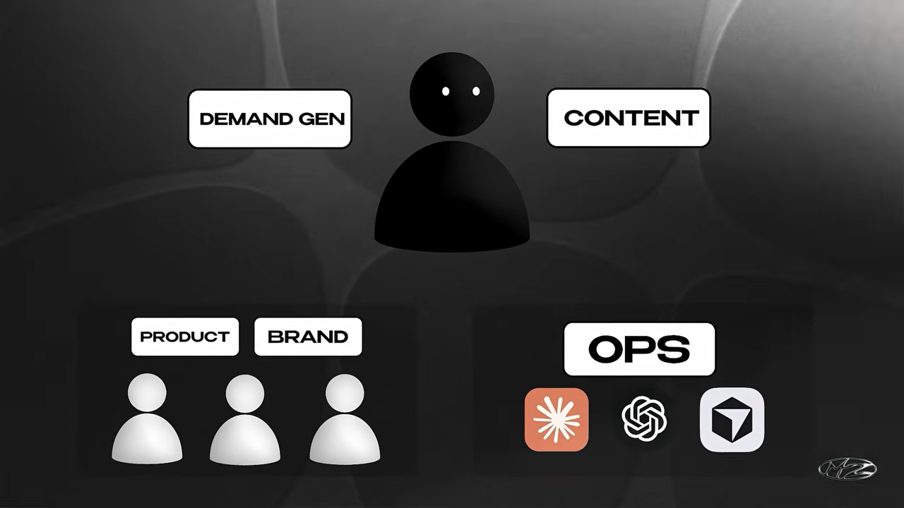
| 갈래 | 하는 일 | 영상이 든 예 |
|---|---|---|
| 브랜드 마케팅 | 인식, 분위기, 존재 이유. 측정하기 어려운 주목을 다뤄요 | Patagonia의 미션, Rhode의 룩앤필, B2B(Business to Business) 핀테크 Ramp의 대형 이벤트 |
| 프로덕트 마케팅 | 제품이 왜 특별한지 찾고 메시지·포장·로드맵에 반영해요 | 올리브유 Graza의 '시즐·드리즐' 두 병, 매대에서 튀는 소스 Sauz, 다이아몬드를 포지셔닝한 De Beers |
| 콘텐츠 마케팅 | 소셜 콘텐츠와 함께 영업 자료·덱 같은 자료도 만들어요 | 타깃에 딱 맞는 콘텐츠의 Merit Beauty, 콘텐츠가 제품만큼 중요한 Red Bull |
| 수요 창출 | 광고를 사고, 파트너·에이전시와 함께 실제 판매를 만들어요 | HexClad, Grüns 같은 틱톡숍·Meta 광고로 큰 브랜드들 |
| 마케팅 운영 | 시스템과 프로세스로 전부를 묶어요. 쇼핑몰 백엔드, AI 프로젝트 관리 등 | (핵심 넷에 덧붙인 영역) |
예전에는 CMO(Chief Marketing Officer)가 이 갈래들을 지휘했어요. 지금은 도구 덕분에 경계가 흐려졌어요. 콘텐츠 마케팅과 수요 창출은 하나가 되고 있고, 프로덕트 마케팅은 콘텐츠를 만드는 동안 실시간으로 일어나요. 브랜드는 바깥 세상에서 훨씬 통제하기 어려운 인식이 됐어요. 젊은 마케팅 리더는 팀을 이끌면서 광고 집행이나 소셜 콘텐츠도 직접 해요. 발표자는 전체를 이해하고, 좋아하는 부분을 깊게 파고, 나머지는 팀과 AI 에이전트에 맡기는 사람에게 기회가 있다고 봐요.
포지셔닝: 무엇으로 기억될까요
발표자는 지금 시대 마케팅에서 가장 중요한 건 전술도 소셜도 아니라고 말해요. 소셜 계정을 열거나 광고를 켜기 전에, 브랜드가 무엇으로 기억될지부터 정해야 한다는 거예요. 이걸 포지셔닝이라고 해요.
Positioning is simply what you're known for.
포지셔닝은 그냥 당신이 무엇으로 알려져 있느냐예요.
— 영상 05:36
목표는 기억되는 거예요. 처음 본 사람이 이 브랜드가 무엇을 대표하는지, 왜 사야 하는지 이해하고 기억해야 해요. 그래서 평범하면 안 돼요. 요즘은 조건이 하나 더 붙어요. ChatGPT나 검색 결과의 AI 요약은 아주 실용적으로 추천해요. 브랜드를 보여 줄 이유가 있어야 하고, 그 이유는 포지셔닝에서 나와요.
매대 테스트
가장 쉬운 연습은 마트 매대 앞에 서 보는 거예요. 에너지 음료 칸을 보면 Monster는 반문화적인 이미지, Alani Nu는 여성 중심, Celsius는 거의 건강 제품처럼, Red Bull은 콘텐츠와 이미지로 서 있어요. 각자 매대에 있을 이유가 분명해요. 회계 소프트웨어든 디자인 에이전시든, 내 브랜드가 그 매대에서 어떤 자리를 차지할지 물어보면 돼요.
자주 쓰는 포지셔닝 유형
| 유형 | 핵심 | 영상의 예 |
|---|---|---|
| 성능 | 기존보다 수치로 더 낫다고 증명해요. 가장 좋지만 가진 브랜드가 드물어요 | 흡수율을 높인 보충제 The Absorption Company, 같은 칼로리에 단백질이 더 많은 David |
| 카테고리 창조 | 익숙한 기능을 새 형태로 옮겨요 | 손목 대신 반지에 넣은 Oura Ring |
| 카운터 포지셔닝 | 큰 기존 시장보다 특정 사람들에게 더 나은 경험을 줘요 | AG1 대신 젤리로 먹는 Grüns, 윈도 컴퓨터에 맞선 맥, 콜라에 맞선 Poppi·Olipop |
| 스마트 | 평범한 제품에 기술을 얹어 기존 제품을 '덜 똑똑해' 보이게 해요 | Eight Sleep 매트리스, Nest |
| 가격 | 더 싸게. 제품은 중국 판매자와 경쟁하기 어려워졌지만 서비스·지역 사업에서는 여전히 강해요 | Temu, Shein이 장악한 시장 |
| 니치 | 언어, 배경, 체형, 하위문화 하나에 집중해요 | Brandy Melville |
| 세대 | 같은 경험을 특정 세대의 말로 풀어요 | 나이 든 소비자의 Jones Road Beauty, Z세대의 Half Magic |
| 단일 속성 | 단어 하나를 소유해요 | 안전의 Volvo |
| 이름 | 이름 하나로 특정 집단을 끌어와요 | 암호화폐 이용자를 끌어들인 의류 브랜드 Satoshi Nakamoto |
니치 포지셔닝은 심리적으로 재미있는 효과가 있어요. 그 브랜드를 사는 행위가 '응원'이 되거든요. 대신 닿을 수 있는 시장, 즉 TAM(Total Addressable Market)이 줄어든다는 점을 받아들여야 해요.
발표자가 따로 짚은 구분이 있어요. 성능, 스마트 같은 포지션은 제품이 실제로 나아져야 쓸 수 있어요. 반면 니치나 세대 포지셔닝은 마케팅만으로도 만들 수 있어요. 아래 그림은 그 차이를 나눠 본 거예요.
값을 더 받는 프리미엄 포지션
값을 더 받으면 마케팅에 쓸 여유도 생겨요. 발표자는 프리미엄 쪽을 네 가지로 나눠요.
- 진짜 성능 브랜드: 마라톤을 진지하게 뛰는 사람을 위한 Satisfy처럼, 아주 진지한 사용자를 위해 만들어요. 그러면 '그렇게 보이고 싶은' 사람들이 뒤따라 사요. Arc'teryx, Salomon이 그런 라이프스타일 성능 브랜드예요. 경험과 전문성, 신뢰가 있어야 버틸 수 있어요.
- 디자인 브랜드: 미감이 차별점이에요. 평균보다 비싼 스피커를 파는 Teenage Engineering이 예예요.
- 맞춤 브랜드: 한 사람에게 꼭 맞춘 단 하나의 제품. 실행은 가장 어렵지만 웃돈을 받을 수 있어요.
- 명품 카운터 포지션: Italic, Quince처럼 '명품 품질을 거품 없이' 팔아요. 가장 싸지는 않지만 원래 사던 값보다는 싸요. 가격 포지셔닝의 새 버전이에요.
이 유형들을 알아야 하는 이유는 하나예요. 어느 브랜드든 이 중 하나를 북극성으로 정해야 해요. 광고, 오가닉 콘텐츠, 랜딩 페이지, 이메일이 모두 여기로 돌아와요. 회사에 이게 없다면 찾아내는 게 마케터의 일이에요. 포지션이 강하면 광고비가 싸지고, 사람들이 기억하고, 추천도 늘어요.
브랜드 월드 지도 그리기
포지션을 정했으면 브랜드를 둘러싼 세계를 한 장에 그려 봐요. 새 마케팅팀에 들어갔을 때, 전략을 새로 짤 때, 프리랜서로 새 고객을 맡았을 때 쓰기 좋은 연습이에요. 발표자는 에이전시 시절 이걸 유료 워크숍으로 팔았고, 이후 계약이 이어지면 워크숍 비용을 차감해 줬다고 해요.
완성된 화이트보드는 넷으로 나뉘어요. 왼쪽 위 Character 칸에는 브랜드를 대변할 사람들(founder, experts, creators, customers, collabs)이 있어요. 가운데 위 Sets 칸에는 촬영 장소(studio, lab, warehouse, factory)가 있어요. 오른쪽은 1~4분기 줄과 events·company·culture·Industry 열로 된 달력이고, 왼쪽 아래 Plot은 events, enemies, friends, specials 네 방향으로 뻗어요.
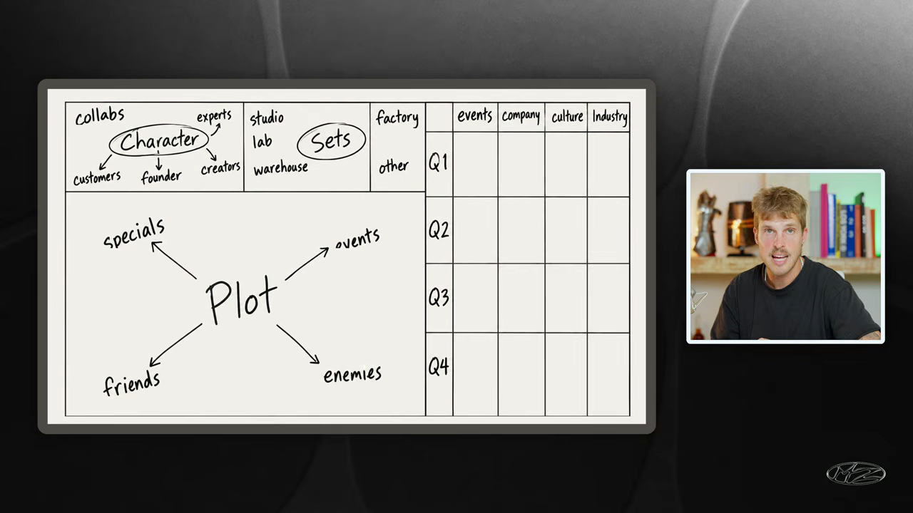
캐릭터와 세트
캐릭터는 카메라 앞에 설 수 있는 모든 사람이에요. 창업자, 전문가, 고용한 크리에이터, 콘텐츠를 만드는 고객, 협업사, 팟캐스트를 하는 임원까지요. Mango는 디자이너를 직접 카메라 앞에 세워요.
세트는 촬영할 수 있는 장소예요. 창고, 사무실, 공장, 연구실 같은 상설 세트가 있고, 박람회 부스처럼 잠깐 생기는 임시 세트가 있어요. 박람회 전날 부스가 다 차려졌을 때 콘텐츠를 몰아 찍는 식이에요. 해외 공장에 소형 카메라를 보내거나 현지 촬영자를 고용하는 것도 생각보다 쉽다고 해요.
이벤트 달력
달력은 세 줄로 채워요.
- 회사: 제품 출시, 사내 워크숍, 매년 가는 박람회. 소프트웨어 회사라면 자잘한 기능 6~8개를 묶어 하나의 '출시'로 만들라고 권해요.
- 문화: 1분기의 새해 결심, 2분기의 코첼라와 페스티벌, 여름, 개학, 4분기의 블랙 프라이데이와 연말. ChatGPT에 '내 타깃 고객이 신경 쓰는 일정'을 물어보면 금방 채울 수 있어요.
- 업계: 매년 열리는 박람회, 경쟁사 출시. 경쟁사와 같은 날 맞붙을지, 직전에 김을 뺄지, 직후에 관심을 끊을지 정해요.
플롯: 이야깃거리 만들기
발표자는 브랜드를 텔레비전 프로그램처럼 생각하라고 해요. 이벤트는 캐릭터가 이야기할 줄거리가 돼요. 여기에 우군(협업 브랜드, 자주 함께하는 인플루언서)과 적(경쟁사의 출시)이 더해져요. 우군에게는 '내년에 투어나 행사가 있는지' 직접 물어보고 끼어들 틈을 찾아요.
달력에 빈 곳이 보이면 스페셜을 만들어요. 여행 가방 브랜드 Away는 아무도 가방을 안 사는 늦여름에 소셜 쇼 일곱 편을 연달아 내보냈어요. 사람들이 가방을 사기 시작하는 노동절·블랙 프라이데이 전에 호감을 쌓아 둔 거예요.
지도를 한 번 그리면 매달·매 분기 갱신해요. 그러면 '이번 주 소셜에 뭐 올리지'라는 고민이 사라지고, 무엇이 빠졌는지가 보여요. 카메라 앞에 설 사람이 한 명도 없다면 채용을 건의해야 하고, 한 분기가 비었다면 스페셜을 기획해야 해요. 발표자는 면접 때 지원 회사의 브랜드 월드를 미리 그려 가면 준비된 사람으로 보인다고도 조언해요. 실제로 마케팅 직무마다 60~90일 계획을 들고 가서 좋은 조건으로 채용됐다고 해요.
메시지, 카피 스타일, AI 활용 단계
소셜 콘텐츠든 광고든 행사든, 마케터는 제품과 브랜드를 말로 설명할 줄 알아야 해요. 예전에는 미션 문구, 태그라인, 비전 문구 같은 문서를 잔뜩 만들었어요. 발표자는 지금은 그게 크게 중요하지 않다고 봐요. 필요한 건 포지셔닝 문장 하나와 카피 스타일 하나예요.
포지셔닝 문장 공식
공식은 다섯 칸을 채우는 문장이에요. 누구를 위한지, 그 사람이 무엇을 원하는지, 우리는 어떤 카테고리에서 어떤 혜택을 주는지, 무엇과 비교되고 무엇이 다른지예요. 아래 그림은 영상의 러너 예시를 칸에 나눠 넣은 거예요.
어느 업종이든 쓸 수 있어요. 옷이라면 '아버지처럼 입기 싫고 편하게 입고 싶은 밀레니얼 남성을 위한, 고민 없이 섞어 입는 옷. 다른 브랜드와 달리 가장 넉넉한 핏으로'처럼요. 필요는 머리로 따지는 것이 아니어도 돼요. 멋져 보이고 싶다, 친구를 사귀고 싶다도 필요예요. 발표자는 이 공식이 제프리 무어의 전통적인 틀을 변형한 것이라고 밝혀요.
카피 스타일 네 가지
| 스타일 | 특징 | 영상의 예 | 참고할 작가 |
|---|---|---|---|
| 다이렉트 리스폰스 | 급하고, 대놓고 문제를 짚고, 숫자로 말해요 | 탈모 브랜드 Hims | 댄 케네디 |
| 근거 중심 | 차분하게 수치와 후기, 사용자 결과로 설득해요 | 전형적인 마케팅 방식 | 클로드 홉킨스 |
| 사람 중심 이야기 | 모든 글을 사람이나 사건으로 시작해요 | 냉동 브리토 Bad Hambres | 존 케이플스 |
| 문화 감각 | 팝컬처를 비튼 말장난으로 웃게 만들어요 | Reformation의 이메일 제목 | — |
다이렉트 리스폰스부터 볼게요. Meta 광고 라이브러리에서 Hims 광고를 띄운 화면이에요. 왼쪽 영상 광고 썸네일에 'FINISH THE SENTENCE. THE WORST PART OF GOING BALD IS…'가, 가운데 이미지 광고에 '79% wish they'd started sooner'가 크게 적혀 있어요. 위 문구는 '3~6개월 안에 더 굵고 풍성한 머리'라고 기간까지 못 박아요.
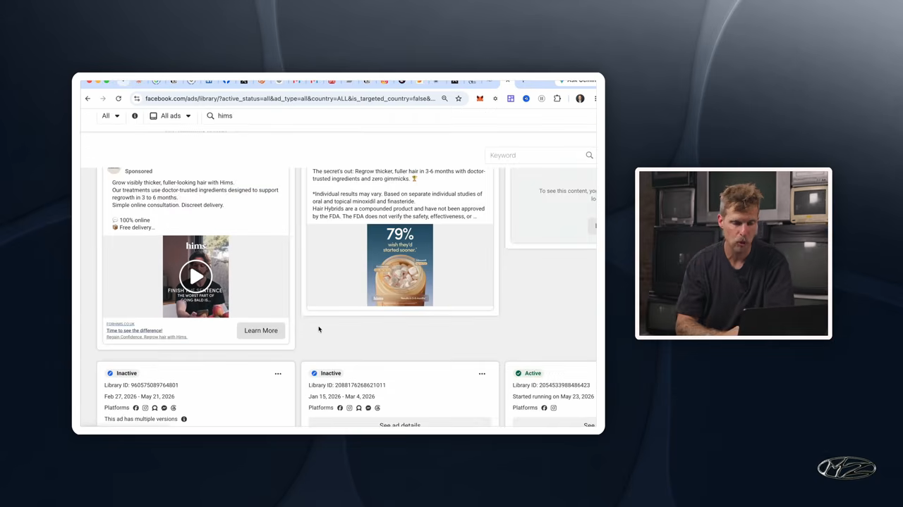
사람 중심 이야기의 예는 Bad Hambres예요. 첫 화면 문구가 'NOTORIOUSLY GOOD FROZEN BEAN & CHEESE BURRITOS'(악명 높게 맛있는 냉동 콩·치즈 브리토), 그 아래 “THE INTERNET'S FAVORITE FROZEN BURRITO”예요. 말투가 친구한테 하듯 가볍고, 페이지 아래로 가면 고객 후기와 팀 사진이 이어져요. 소셜에서는 매번 '이번 주 우리 가게에 이런 일이 있었어요'로 시작해요.
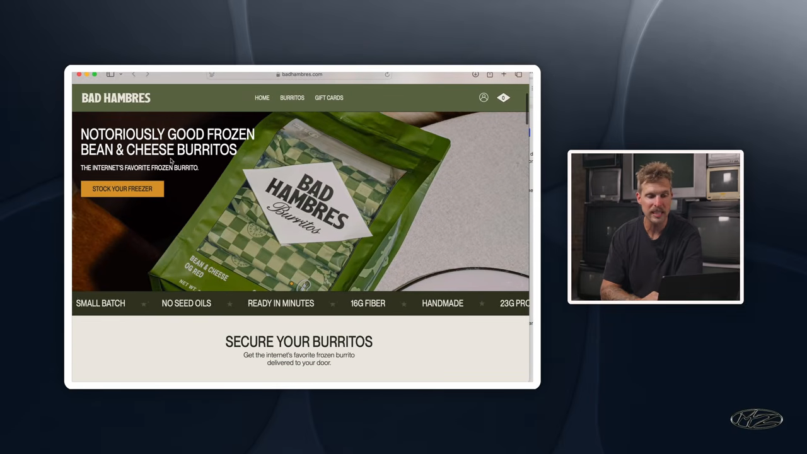
Reformation의 문화 감각형은 '종 좀 울려 봐(Ring my bell)', '서브할 시간(Time to serve)' 같은 이메일 제목으로 고객을 웃게 해요. 브랜드와 고객이 같은 문화를 공유할 때만 통해요. 발표자는 마음에 드는 스타일을 정했으면 그 작가의 책을 한 권 읽어 보라고 해요. 그것만으로도 대부분의 마케터보다 설명을 잘하게 된다고요. 스타일 이름을 알아 두면 AI에게 '이 스타일로 써 줘'라고 시킬 때도 편해요. 많은 브랜드는 여러 스타일을 시험하며 맞는 걸 찾아가요.
AI를 쓰는 다섯 단계
발표자가 지금 마케팅에서 가장 크게 달라졌다고 보는 부분이에요. 여러 브랜드 마케팅 조직과 일하며 보니, 팀마다 AI를 받아들인 수준이 이렇게 갈렸다고 해요.
- 채팅: 그냥 질문하고 시켜요. 팀의 90%가 여기 있어요.
- 프로젝트: 제품 정보, 웹사이트 문구, 포지셔닝 문장, 고객 후기를 넣은 브랜드 전용 공간이에요. 발표자는 두꺼운 브랜드 가이드보다 이런 핵심 자료만 골라 넣으라고 해요. 결과에 '이건 좋고 이건 별로'라고 피드백하면 프로젝트가 기억하고, 팀원도 같이 써요.
- 스킬: 자주 반복하는 작업을 정해진 형식으로 만들어요. '신제품마다 퀴즈 랜딩 페이지 만들기', '카테고리 비교 광고 아이디어 뽑기' 같은 거예요.
- 에이전트: 대신 일을 해요. 발표자는 Meta 광고를 읽기 권한으로 들여다보고 매주 금요일 요약과 진단을 보내는 에이전트를 써요. 예전에 직접 쓰던 주간 보고서를 학습시켰어요.
- 마케팅 두뇌: 광고, 크리에이티브 전략, 원가(BOM(Bill of Materials)), 매출 원가까지 다 연결된 중앙 저장소예요. 함께 사업 결정을 내려요. 대부분 브랜드는 앞 단계부터 거쳐야 해요.
핵심은 '혼자 쓰기'에서 '함께 쓰기'로 넘어가는 거예요. 그래서 역할을 나누라고 해요. 한 사람은 프로젝트에 새 문구를 올리고 다듬는 책임을, 한 사람은 스킬을 만들고 갱신하는 책임을 져요. 발표자는 시청자에게 프로젝트 관리와 스킬 만들기 두 가지에 집중하라고 권해요. 그것만 해도 돈이 되는 능력이라고요. 그리고 AI가 쓴 초안 위에 사람의 사례, 회사에서 실제로 있었던 일, 재미있는 디테일을 꼭 덧붙이라고 해요. 그게 평범한 결과와 큰 브랜드의 결과를 가르는 차이예요.
오가닉 소셜로 수요 만들기
마케팅팀의 진짜 일은 차별점을 정하고, 쓸 수 있는 도구를 정리한 뒤, 사람들의 관심을 끌어 사게 만드는 거예요. 발표자는 브랜드 전략이든 아트 디렉션이든 결국은 사람들을 설득해 사게 하려고 있는 거라고 말해요. 수요를 만드는 길은 셋이에요. 오가닉 소셜, 광고, 그리고 직접 연락하는 아웃바운드 영업이에요.
그중 소셜이 지금 마케터의 무기라고 해요. 발표자가 처음 일을 시작할 때는 첫 게시물로 수십만 조회수를 얻는 일이 불가능했어요. 지금은 가능하고, 그 조회수가 매출과 방문, 상담 신청으로 이어져요. 아직도 겁내거나 낡은 방식을 쓰는 경쟁자가 많아서 기회가 남아 있다고 봐요. 오가닉 소셜은 이야기(내러티브), 그 이야기를 보여 주는 취향, 기법을 익히는 집중, 그리고 믿을 만한가 하는 신뢰로 이뤄진다고 정리해요.
어느 소셜 채널에 집중할까요
여러 채널을 어중간하게 하기보다 한두 개를 골라 잘하는 게 중요해요.
| 채널 | 장점 | 조건과 주의 |
|---|---|---|
| 틱톡 | 영상이 좋으면 바로 노출을 줘요 | 비즈니스 공식 계정은 고전해요. 여러 계정, 크리에이터, 슬라이드쇼로 '군단'을 꾸릴 사람이 없으면 인스타그램 콘텐츠를 옮겨 올리는 정도로 충분해요 |
| 인스타그램 | 처음부터 조회수를 주고, 좋은 콘텐츠로 언제든 판을 바꿀 수 있어요 | 제품 사진만 올리면 안 돼요. 전략이 필요해요. 대부분 브랜드의 주 채널로 추천해요 |
| 유튜브 | 서비스 사업에 좋아요. 조회수 1~2천으로도 사업을 굴릴 리드가 와요 | 썸네일·제목·채널 생리를 아는 사람이 없으면 헛수고예요 |
| 링크드인 | B2B와 리드 중심 사업에 좋아요 | '팀 스포츠'예요. 한 사람보다 다섯 명 이상이 함께 할 때 효과가 커요 |
링크드인 예로 든 곳이 Buffer예요. 화면은 Buffer의 회사 페이지로, 팔로워 18만 6천 명에 직원 51~200명 규모라고 적혀 있어요. 발표자에 따르면 이 회사는 직원 80% 이상이 링크드인에서 활동하고, 보상 프로그램까지 두고 있어요. 같은 회사 사람들이 서로의 글에 반응하면 링크드인이 그 글을 더 널리 보여 줘요.
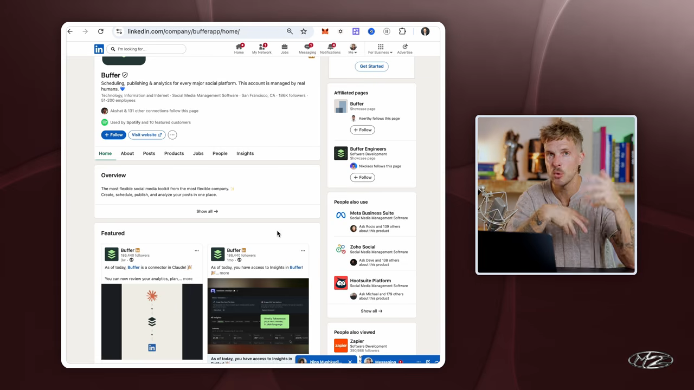
인스타그램 전략 세 가지
발표자는 브랜드 90%가 아래 셋 중 하나에 집중하면 된다고 해요. 대부분은 첫 번째예요.
1. 전문가가 카메라 앞에서 말하기. 가장 쉽고 효과적이에요. 창업자든 고용한 사람이든 한 사람이 사업과 관련된 이야기를 꾸준히 해요. 주 3회 이상은 올려야 해요. 아래는 Olivia Unplugged 계정이에요. 스크린 타임 관리 앱 Opal이 고용한 크리에이터로, 앱 공식 계정이 아닌 자기 계정에서 '휴가 없이도 신경계를 진정시키는 법', '메타인지' 같은 정신 건강 이야기를 해요. 오른쪽 위 영상들에 opal 로고가 보여요.
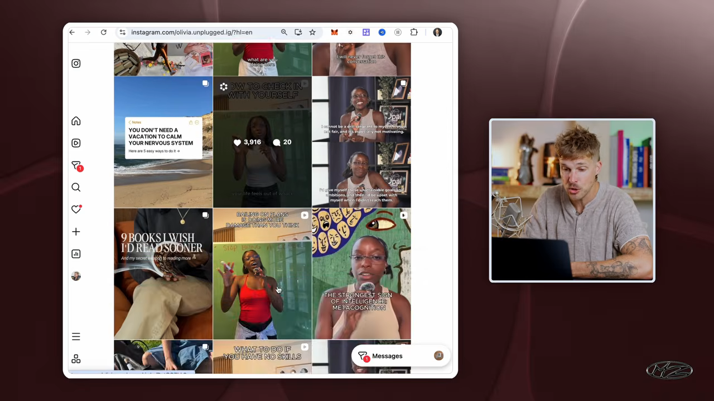
의류 브랜드 Front Office의 창업자 Ken Sakata는 자기 옷만이 아니라 옷 전반을 깊게 파고들어요. 피드의 'POWERHOUSE MUSEUM VINTAGE FABRIC', 'SAMURAI ARMOUR' 같은 게시물이 박물관 소장품으로 원단과 갑옷을 설명하는 콘텐츠예요. 이렇게 전문성을 쌓아 두면 새 옷을 낼 때 그 안에 들어간 고민이 저절로 전해져요.
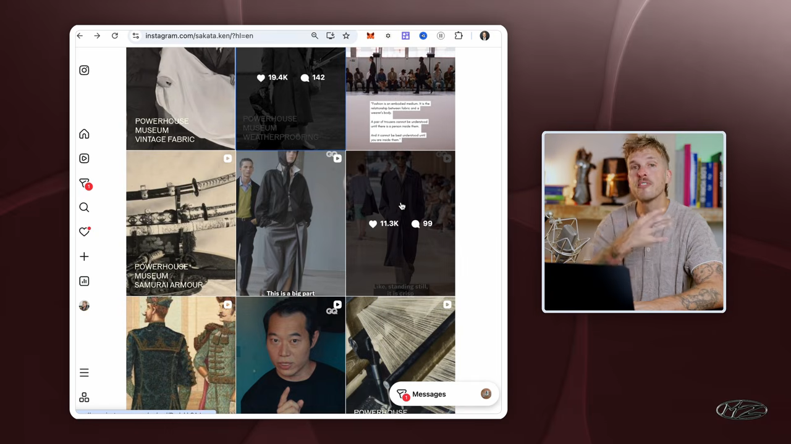
2. 이야기 중심. 사업 자체가 흥미로울 때 써요. 앞에서 본 Bad Hambres가 '직장을 그만두고 낡은 타코벨을 인수해 브리토를 만든다'는 영웅 서사로 매주 이야기를 풀어요. 꼭 얼굴이 나오지 않아도 되고, 브이로그와 캐러셀로 주 2회쯤이면 돼요.
3. 강한 아트 디렉션. 뛰어난 크리에이티브 인재가 한 명 있어야 해요. 여성 패션 브랜드 Meshki는 게시물 하나하나를 작품처럼 연출해요. 화면의 게시물도 커튼 앞 한 인물을 공들여 찍은 사진에 'Your work wardrobe, upgraded.' 한 줄만 붙였어요. 피드에서 튀지만 시간이 많이 들어요.
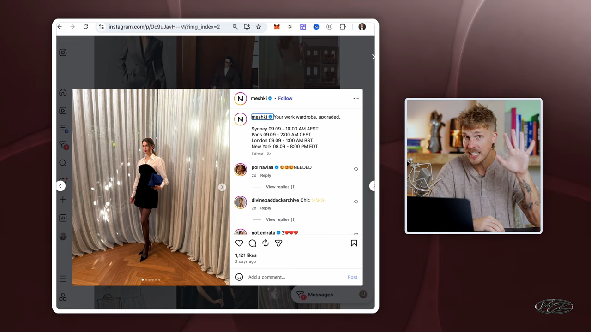
목표와 지표
소셜을 하는 목적은 둘로 나눠 재요. 첫째는 브랜드 인지예요. 계정 전체의 한 달 총 도달로 봐요. 둘째는 판매예요. 리드, 가입, 이메일 구독, 그리고 소셜에서 넘어온 매출로 봐요. 개별 콘텐츠는 훅 레이트, 조회수, 저장, 공유로 평가해요.
콘텐츠를 설명할 때는 퍼널로 나누면 편해요. 아래 그림은 발표자가 든 패션 브랜드 예시를 퍼널 단계에 넣은 거예요.
계획 전에 알아 둘 두 가지
첫째, 브랜드 계정보다 브랜드를 둘러싼 사람들이 더 중요해요. 지역 가게가 아니라면 공식 계정에 시간을 쏟기보다 전문가, 창업자, 크리에이터, 인플루언서를 늘리는 쪽이 효과가 커요. 사람들은 인물에게 끌리고, 인물은 계약으로 늘릴 수 있어요.
둘째, 경쟁 상대는 같은 업종 브랜드가 아니에요. ICP(이상적인 고객)가 휴대폰을 열었을 때 뜨는 모든 콘텐츠예요. 고객이 팔로우하는 계정을 따라 하는 새 계정을 만들고 하루 10~15분씩 2주쯤 보면 진짜 경쟁 상대가 보여요. 대개 다른 브랜드가 아니라 개인, 콩트, 공감 가는 영상이에요. 그래서 기준은 하나예요. 누군가 친구에게 공유할 이유가 있나요? 공감되는 경험, 전문 지식, 튜토리얼, 웃기거나 아름다운 것이 공유돼요.
실제 사례들
캐나다의 K뷰티 편집숍 Kiyoko Beauty는 창업자와 핵심 팀원이 직접 나와 제품을 비교하고 추천해요. 피드에 'Which Eye Cream is for you?', 'hyaluronic acid', 'Azelaic acid' 같은 성분·제품 비교 영상이 줄지어 있어요. 창업자가 운영만큼 콘텐츠에 시간을 쓰는 구조예요.
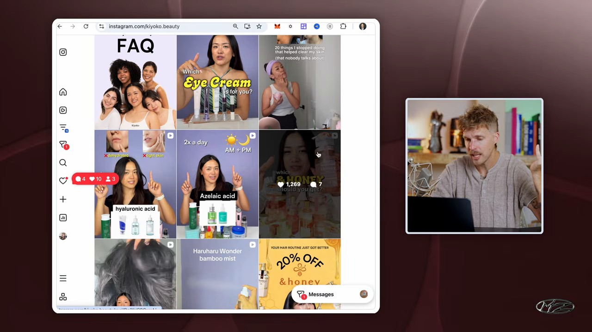
의류 제조사 Crease Group은 창업자가 아닌 크리에이터를 계정의 얼굴로 세웠어요. '중국 최고의 가죽 재킷 만들기' 같은 도전 콘텐츠를 하고, 발표자 같은 협업자와 함께 퍼널 위쪽 관심을 끌어요. 화면은 발표자 계정과 creasegroup이 함께 올린 캔턴 페어 방문 릴스예요. 설명란에 비자, 숙소, 공장 찾는 요령을 길게 적었고, 'Crease Group을 확인하라'는 문장도 있어요. 공장 일은 지루해서 콘텐츠가 안 된다는 통념을 깬 사례라고 해요.
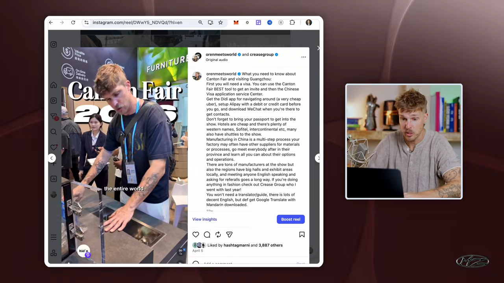
발표자가 마케팅을 이끌던 장난감 회사 Gel Blaster는 지역별 틱톡 계정을 따로 운영했어요. 화면의 멕시코 계정은 미국 콘텐츠를 스페인어로 옮긴 POV(Point of View) 영상들이에요. 손만 나오고 목소리를 입혔는데, 영상마다 조회수가 15만, 21만처럼 찍혀 있어요. 이 계정은 팔로워 80만까지 컸어요. 말할 사람이 없어도 시각적으로 흥미로운 콘셉트가 있으면 된다는 예예요.
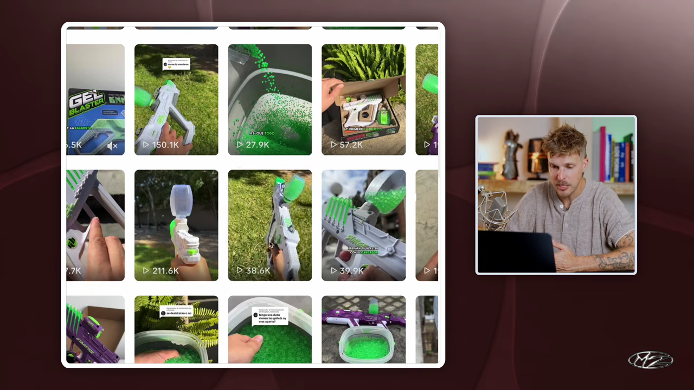
서비스 사업도 같아요. 발표자 친구의 웹 디자인 스튜디오는 리드 대부분을 소셜에서 얻어요. 화면의 '0/10 vs 10/10' 비교, 'Yeezy vs Skims', 'Email design for Black Friday' 같은 게시물이 유명 브랜드 사이트를 평가해 관심을 끌고, 자기 작업을 보여 주며 고객을 데려와요.
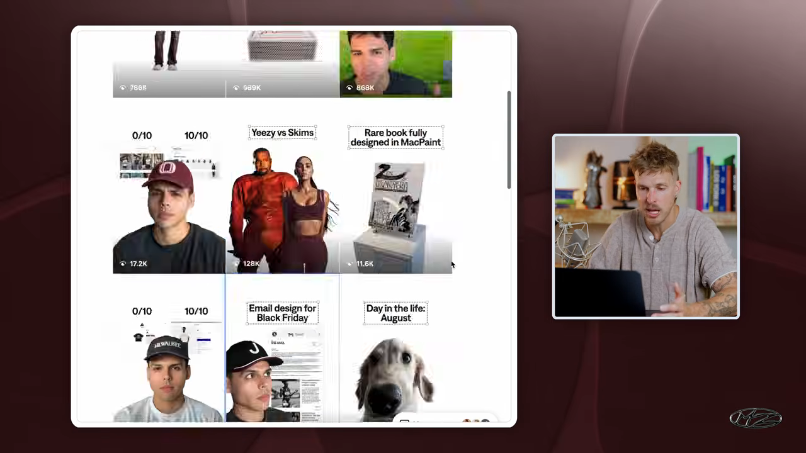
실행 계획: 필러 시스템
1단계는 이래요. 소셜 담당자와 카메라 앞에 설 사람, 이상적으로는 두 명을 둬요. 그리고 포맷 3~5개를 골라 '필러'로 삼아요. 예를 들어 캐러셀, 브이로그, 앉아서 설명하기 세 개요. 필러마다 한 달에 3~4개씩 올리면 한 달 12~16개가 돼요.
flowchart LR A["포맷 3~5개를
필러로 정하기"] --> B["필러마다
월 3~4개 게시"] B --> C["월말에 한 번 비교
조회·저장·공유·훅 레이트"] C --> D{"두 달 연속
부진한가요?"} D -- "예" --> E["다른 포맷으로 교체"] D -- "아니요" --> B E --> B C --> F["관계자에게
월간 보고"]
월말 며칠 뒤, 숫자가 다 찬 다음에 한 시간쯤 들여 필러끼리, 그리고 지난달과 비교해요. 새 팔로워와 기존 팔로워 반응도 봐요. 4~5개월 데이터가 쌓이면 다음 직장이나 고객에게 '저는 이렇게 소셜을 측정하고 검증해요'라고 보여 줄 수 있어요. 주 채널 콘텐츠는 유튜브 쇼츠, 링크드인, 틱톡, X에도 몇 분만 들여 올려요. 처음엔 반응이 미미해도 쌓이면 커져요.
2단계는 채널별 전략을 따로 세우는 거예요. 인스타그램용이 틱톡에서 안 통하면, 아이폰으로 찍은 더 사적인 콘텐츠처럼 틱톡만의 방식을 따로 만들어요. 다만 한 채널을 잘하기 전에는 하지 말라고 해요. 필러를 돌리면 3~5개월이면 감이 오고, 늦어도 6개월이면 좋아진다고 해요. 매달 정기적으로 영상을 만들어 주는 협업 크리에이터를 필러 하나로 두는 방법도 있어요.
광고: 숫자, 채널, Meta 실전
발표자는 크리에이티브 쪽 시청자들이 광고 이야기만 나오면 눈이 풀린다는 걸 알지만, 생각보다 훨씬 쉽고 값진 기술이라고 말해요. 디자이너든 영상 제작자든 소셜 담당자든, Meta 광고를 기본만 알아도 '무기'가 된다고요. 순서는 용어 → 채널 → Meta 실전이에요.
꼭 알아야 할 숫자
가장 중요한 숫자는 ROAS예요. 광고비 1달러를 쓰면 매출이 얼마 돌아오는지예요. ROAS 0.5면 1달러를 써서 50센트를 벌었고, 2면 2달러를 벌었다는 뜻이에요. 이 숫자 하나로 사업 모델을 계산할 수 있어요.
영상의 예를 그대로 따라가 볼게요. 패션 제품은 원가의 4배 가격이 흔해요. 원가 25달러짜리를 100달러에 팔아요. 광고 ROAS가 2라면 100달러 매출에 광고비 50달러를 쓴 거예요. 100 − 50 − 25 = 25달러가 남아요. 발표자는 이 계산이 온라인 광고 전체를 굴리는 수학이라고 해요. 아래에서 숫자를 바꿔 보면 감이 와요.
판매 한 건에 쓴 광고비 50달러
판매 한 건에 남는 돈 25달러
본전이 되는 ROAS 1.33
광고비와 원가를 빼고도 남아요.
- 기본값(100달러, 원가 25달러, ROAS 2)에서 남는 돈이 영상과 같은 25달러인지 확인해 보세요.
- ROAS를 1.3까지 내려 보세요. 매출은 그대로 100달러인데 남는 돈이 0 근처로 떨어져요. ROAS가 '이익'이 아니라 '매출'의 배수라서 그래요.
- 원가 25달러, ROAS 2는 그대로 두고 판매가만 35달러로 내려 보세요. 팔수록 손해가 나요. 발표자의 패션 브랜드가 Meta에서 180~350달러 제품에 집중하는 이유가 여기 있어요. 싼 제품은 팔려도 계산이 안 맞는대요.
나머지 용어도 짧게 정리할게요.
| 용어 | 뜻 | 발표자의 관점 |
|---|---|---|
| CPA(Cost Per Action) | 판매(행동) 한 건을 얻는 데 든 평균 비용 | 같은 30달러라도 35달러짜리를 팔 때와 100달러짜리를 팔 때 의미가 전혀 달라요 |
| CAC(Customer Acquisition Cost) | 신규 고객 한 명을 얻는 데 든 비용 | 재구매 고객과 첫 고객을 나눠 봐야 해요 |
| LTV(Lifetime Value) | 한 고객이 오랜 기간 쓰는 총액 | 현금이 빠듯한 초기에는 첫 주문에서 이익을 내야 하고, 데이터가 쌓이면 LTV 기준으로 판단해요. 목표는 CAC:LTV 1:3 |
| 클릭률·장바구니·결제 시작 | 광고를 본 뒤 단계별로 얼마나 넘어왔는지 | 이메일 팝업 가입도 가치가 있어요 |
| CPC(Cost Per Click)·CPM(Cost Per Mille)·썸스톱 | 클릭당 비용, 1,000회 노출당 비용, 처음 몇 초를 본 비율 | 참고는 하되 집착하지 말래요. 목표 지표가 좋으면 나머지는 크게 상관없어요 |
CAC:LTV 1:3은 고객 한 명이 1~2년간 평균 100달러를 쓴다면 신규 고객 획득에 33달러까지 쓴다는 뜻이에요. 발표자는 이 비율을 맞추면 아주 빠르게 성장할 수 있다고 해요. 그리고 마케팅이 측정 가능할수록 예산을 더 받고 더 재미있는 일을 할 수 있다고 강조해요.
어느 광고 채널부터 쓸까요
flowchart LR A["Meta
(대부분 브랜드의 1순위)"] --> B["틱톡
(Meta 소재 재활용)"] B --> C["유튜브
(가로 영상, 두 번째 주력)"] C --> D["구글
(유튜브와 같은 광고 도구)"] D --> E["보조 채널
AppLovin · Shop 앱 · 스냅챗"]
- Meta: 페이스북과 인스타그램에 광고를 띄워요. 브랜드 90%가 여기서 시작하면 된다고 해요. 한 시간이면 누구에게나 광고 관리자를 가르칠 수 있대요.
- 구글: 검색량이 많은 분야라면 좋아요. 다만 화면이 어려워서 에이전시를 쓰거나 AI 연결 도구로 데이터를 읽는 걸 권해요.
- 틱톡: Meta와 비슷하게 돌아가요. 분야에 따라 Meta 규모의 30~50%까지 나와요.
- 링크드인: 비싸지만 B2B나 고가 상품이면 통해요. 우선순위는 Meta보다 한참 뒤예요.
- 유튜브: 아직 저평가돼 있어서 Meta 다음 두 번째로 좋다고 봐요. 전용 소재가 필요해요.
- 뉴스레터 협찬: 고객층이 특이하다면 발표자가 특히 좋아하는 방법이에요. beehiiv 같은 플랫폼의 협찬 네트워크를 쓰거나, ChatGPT에 분야별 인기 뉴스레터를 물어 광고 단가표를 받아요.
Meta 광고, 직접 켜 보기
먼저 발표자가 짚는 원칙이에요. 미디어 바잉은 잘 되는 것에 돈을 몰아주고, 계속 잘 되는 것을 찾으려고 새것을 시험하는 일이에요. 광고 몇 개 켜 놓고 기다리는 게 아니라 매주 반복하는 과정이에요. 가장 크게 움직이는 레버는 고객이 누구인지, 그에 맞는 메시지인지, 어떤 제품을 어떤 가격에 밀지, 어떤 제안을 할지, 그리고 소재 자체예요.
새 캠페인을 만들면 구매 방식(Auction)과 목표를 고르는 창이 떠요. 여섯 개 목표 가운데 맨 아래 Sales가 선택돼 있어요. 대부분은 판매를 고르고, 가끔 리드를 고른다고 해요.
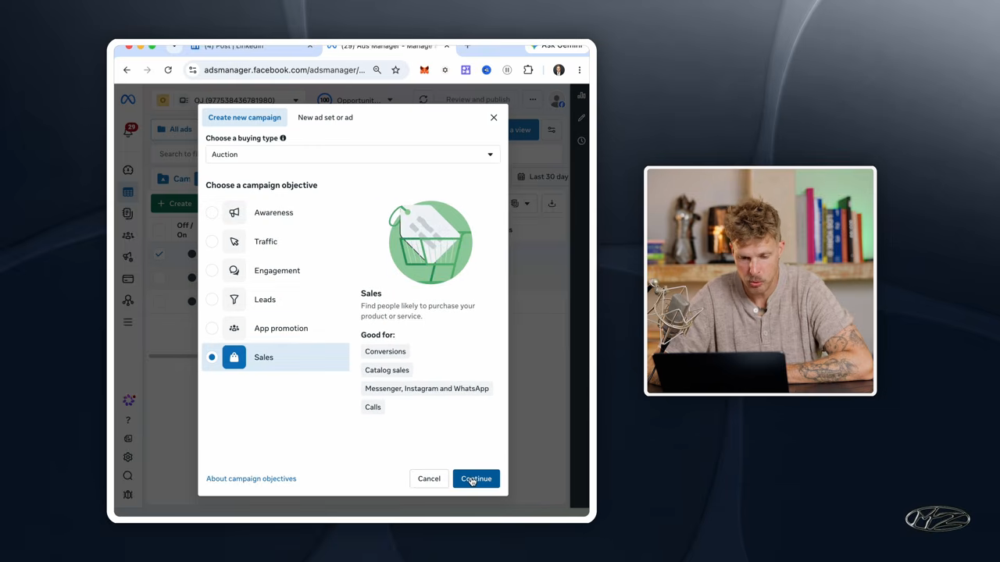
가장 큰 선택은 예산을 어디에 둘지예요. 화면의 Budget strategy에서 위쪽 Campaign budget에는 'Also known as Advantage+ campaign budget'이라고 적혀 있고, 발표자는 아래쪽 Ad set budget을 누르고 있어요. 그 아래 '예산 일부를 다른 광고 세트와 나누기(최대 20%)' 체크박스는 보통 끈다고 해요.
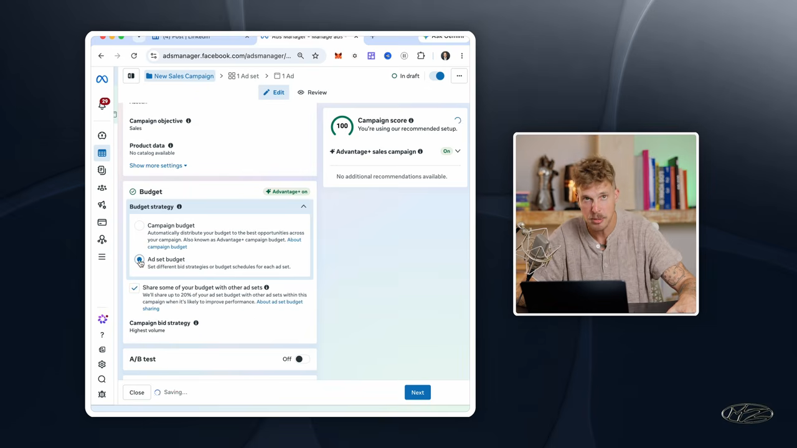
캠페인 예산(업계에서 CBO(Campaign Budget Optimization)라고 불러요)은 데이터가 많고 고객 명단이 탄탄한 브랜드가 고려할 선택지예요. 시작하는 브랜드는 광고 세트 예산으로 가요. 그래야 콘셉트별로 돈을 통제할 수 있어요. 구조는 아래 그림처럼 잡아요.
광고 세트에서는 '최대 전환 수'와 '가장 많은 결과(Highest volume)' 입찰로 시작해요. ROAS 목표나 입찰 상한은 익숙해진 다음이에요. 예산은 광고 세트당 하루 50달러를 권해요. 10달러도 되지만 느리고, 100달러면 더 빨리 배워요.
타깃은 이렇게 넓혀 가요. 아래 화면은 Audiences 탭이에요. Engaged audiences 아래 Qualified leads 묶음에 업로드한 이메일 명단(약 2만 6,800~3만 1,500명)이 있고, 맨 아래에는 인스타그램 계정 반응자로 만든 맞춤 타깃(약 86만~100만 명)이 있어요.
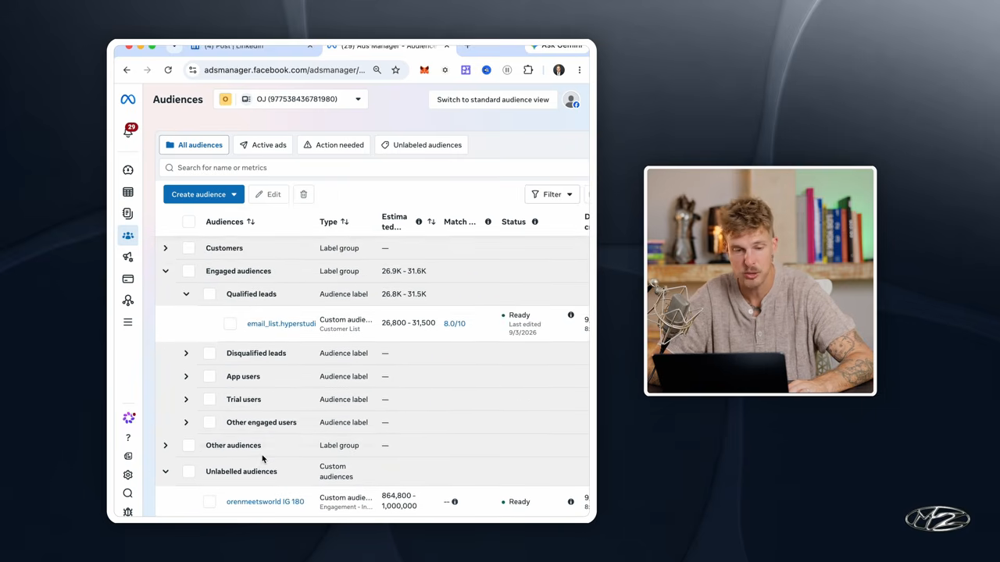
- 유사 타깃: 고객 명단을 올리고 국가와 일치 정도를 골라요. 1%가 가장 비슷하고, 발표자는 3%에서 시작해 10%로 넓혀요. 처음에 쓰기를 가장 권하는 방법이에요.
- 관심사 타깃: 데이터가 전혀 없을 때 '21~25세, 이런 관심사' 식으로 골라요.
- 넓은 타깃: 데이터가 많이 쌓이면 Meta가 알아서 찾게 맡겨요.
매주 돌리는 테스트
매주 같은 고리를 돌려요. 크리에이티브 전략을 짜고 → 광고를 사고 → 결과를 보고 → 다시 새 전략을 짜요. 큰 브랜드는 한 달에 새 광고를 50~400개 넣지만, 시작하는 브랜드라면 매주 새 광고 세트 2~3개, 세트마다 광고 3개쯤이면 돼요. 세트는 고객 유형('엄마들')이나 소재 유형('그린스크린 영상')으로 묶어요. 한 세트에 3~10개를 넣되, 살짝 고친 복사본이 아니라 같은 주제 안에서 확실히 다른 소재로 채워요.
판단 기준은 목표 CPA예요. 그 3~5배를 써 본 뒤 결정해요. 영상의 예는 목표 50달러짜리 판매를 하루 50달러로 5일, 총 250달러 테스트하는 거예요.
flowchart TD A["목표 CPA 50달러
5일간 250달러 사용"] --> B{"판매가 몇 건?"} B -- "5건 이상 (목표 달성)" --> C["예산 늘리기 (스케일링)"] B -- "3건쯤" --> D["조금 더 테스트"] B -- "0건, 하지만 장바구니·결제 시작·가입은 많음" --> E["끄지 말고
랜딩 페이지·메시지 고치기"] B -- "결과가 아주 나쁨" --> F["끄기"]
광고 관리자의 표는 보기 괴로워요. 그래서 발표자는 ChatGPT에 Meta를 MCP(Model Context Protocol)로 연결해서 쓰라고 해요. Meta 개발자 계정과 앱을 만드는 과정이 필요하지만 AI에게 다음 단계를 물으며 따라가면 15분쯤 걸린다고 해요. 연결하면 월요일마다 '지난주 어떤 광고 세트가 잘 됐어?'라고 물어 보고서를 받아요. 예산 조정이나 세트 끄기 정도만 시키고, 광고 게시는 광고 관리자에서 직접 하라고 해요. 자동으로 광고를 많이 올리면 Meta가 계정을 막을 수 있어서예요. 광고 세트 이름에 고객 유형과 소재 유형을 적어 두면, AI가 고객 정보 프로젝트와 함께 보고 새 훅과 광고 각도를 제안해 줘요.
광고 소재 형식도 정리해요. 이미지 한 장인 정적 광고, 짧은 영상 광고, 여러 장을 넘기는 캐러셀 광고, 쇼핑몰 상품 사진으로 자동 생성하는 카탈로그 광고가 있어요. 다른 사람 계정으로 광고하는 화이트리스팅은 다음 섹션에서 다뤄요.
마지막 수단, 아웃바운드
소셜도 광고도 없이 당장 매출이 필요하면 아웃바운드예요. 회사로 쏟아지는 영업 메일과 링크드인 메시지가 다 아웃바운드예요. 발표자의 첫 에이전시(엔지니어링 외주)는 하루 이메일 수백 통, 링크드인 메시지 수십 통으로 컸어요. 통장에 몇 달치 월세만 남았던 때라 '의지와 소모전'이었다고 해요. 도구로는 메시지를 보내고 잠재 고객을 찾는 링크드인 세일즈 내비게이터, 그리고 발신 도메인·메일함 준비부터 대상 명단까지 처리하는 ListKit을 꼽아요.
크리에이터, 인플루언서, 브리프
앞에서 그린 브랜드 월드의 '캐릭터'를 넓히는 이야기예요. 크리에이터와 인플루언서가 어떻게 다른지, 어디서 찾는지, 그리고 좋은 결과를 내게 하는 브리프를 어떻게 쓰는지 다뤄요.
크리에이터는 무엇에 쓰나요
발표자가 말하는 크리에이터는 팔로워 0명에서 수십만 명 사이의, 아직 이름이 크지 않은 제작자예요. 쓰임은 넷이에요.
- 광고 소재: Meta나 틱톡 광고에서 사람이 직접 나오는 소재가 대체로 성과가 가장 좋아요. 브이로그, 수다형 영상 같은 스타일과 성별·인종·분위기가 다른 여러 목소리가 필요해요. 사람마다 끌리는 대상이 달라서예요. 이걸 크리에이티브 다양성이라고 해요.
- 시딩: 대가 없이 제품을 보내고 올려 주길 기대해요. 원가가 10~40달러 정도인 저가 제품 브랜드가 많이 써요.
- 제휴: 판매액의 일정 비율을 받고 콘텐츠를 만들어요. 틱톡숍, ShopMy, 'LTK'처럼 개인 링크를 주는 서비스가 있어요.
- 계정 운영: 공식 계정의 얼굴이 되거나(앞에서 본 Crease Group), 별도 계정에서 홍보해요(Opal의 Olivia Unplugged). 독서 앱 BeFreed는 외모와 배경이 다른 크리에이터 수십 명이 비슷한 형식의 영상을 올려요.
찾는 순서도 알려 줘요. 첫 번째는 자기 고객 명단이에요. OuterSignal 같은 앱이 고객·구독자 명단에서 이미 인플루언서인 사람을 찾아 줘요. 광고 소재 전용 크리에이터는 Tribe, 계정 운영자는 Sideshift 같은 곳에서 찾고, Later처럼 관리 대행을 해 주는 플랫폼도 있어요.
인플루언서와 캠페인 피라미드
인플루언서는 이미 자리를 잡아 한마디로 캠페인을 움직이는 사람이에요. 발표자 자신도 처음엔 크리에이터였지만 지금은 Shopify 신기능 발표에 참여하는 인플루언서예요. 아래 슬라이드처럼 세 층이 함께 움직이는 게 요즘 전략이라고 해요. 맨 아래 'MICRO CREATORS' 일곱 명, 가운데 '30K-100K FOLLOWERS' 네 명, 맨 위 'ANCHORS' 세 명이에요.
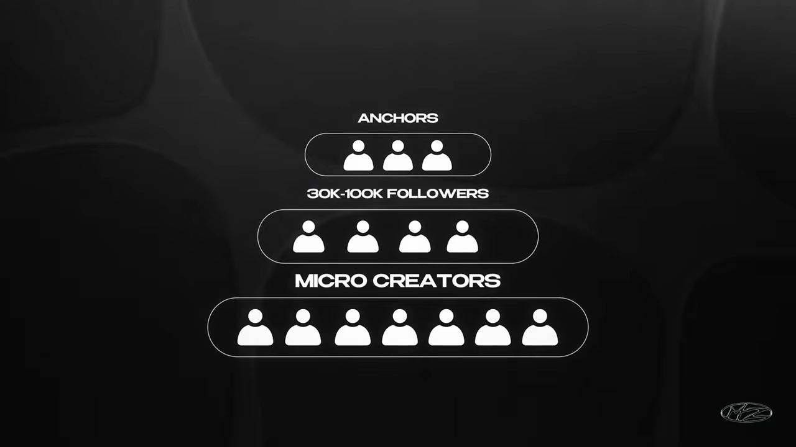
크리에이터를 찾고 연락하는 일은 숫자 게임이에요. 많이 찾고 많이 연락해야 해요. 그래서 에이전트를 만들기 좋은 일이라고 해요. 틱톡·인스타그램에서 특정 단어를 언급한 사람을 찾고, 활동 중인지 거르고, 첫 연락 메일을 보내는 반복 작업이요. Meta에도 크리에이터를 찾는 기능이 있고, Social Snowball 같은 도구도 있어요.
모듈형 브리프
사람을 찾는 것보다 중요한 게 브리프예요. 크리에이터, 디자이너, 영상 제작자에게 주는 작업 안내서예요. 발표자는 항목을 넣고 뺄 수 있는 '모듈형 브리프'를 써요. 상위 10% 크리에이터는 브리프 없이도 알아서 잘하지만, 나머지 90%에게는 꼭 필요하다고 해요.
| 항목 | 담을 내용 |
|---|---|
| 핵심 메시지 두 개 | 다섯, 열 개가 아니라 꼭 전할 두 가지 |
| 타깃 | '밀레니얼 엄마들'처럼 누구에게 말하는지. 페르소나를 AI에 넣어 요약해도 돼요 |
| 콘텐츠 형식 | 브이로그인지, 수다형인지, 이미지인지. 바꿀 여지가 있는지 |
| 훅 아이디어 | 화면 문구, 첫 장면, 첫 대사. 제품을 여는 장면 같은 '물건 훅'에 특히 좋아요. 잘 된 훅은 크리에이터끼리 돌려 써요 |
| 참고 자료 | 잘 된 이전 콘텐츠, 저장해 둔 레퍼런스 링크 |
| 메커니즘 (빼기 쉬움) | '블리츠'(10가지를 빠르게 나열), 7분짜리 썰 풀기 같은 형식 |
| 간단한 구성안 | 상황 → 요점 → 농담 같은 흐름. 따르지 않아도 되지만 즉흥으로 헤매지 않게 해요 |
| 제공 소재 | 쓸 수 있는 영상, 보조 화면, 그래픽. 그린스크린 영상이면 특히 도움이 돼요 |
| 필요한 변형 | 댓글 유도 CTA(Call To Action), 광고용 CTA, 훅 두세 개 등 따로 받을 버전 |
구성안 슬라이드는 이렇게 생겼어요. 1번 '상황에 들어가 주세요', 2번 '요점으로 들어가 주세요', 3번 '농담으로 넘어가 주세요' 세 줄이에요. 새 크리에이터에게 이 정도만 줘도 영상의 뼈대가 잡혀요.
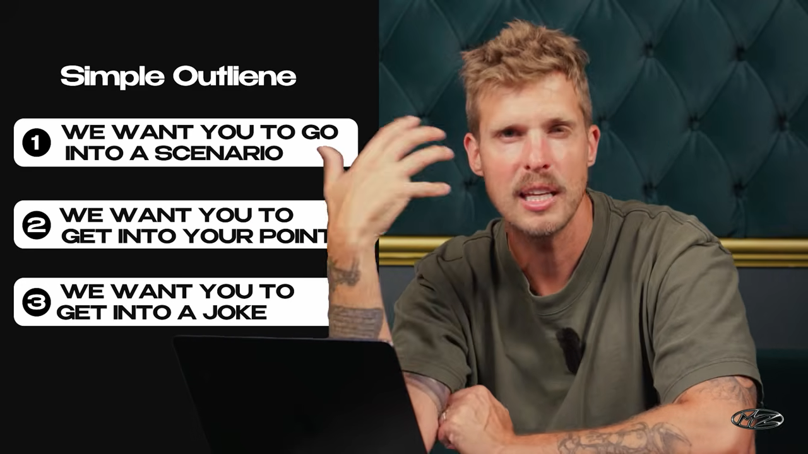
화이트리스팅과 다크리스팅
화이트리스팅은 인플루언서가 자기 피드에 올린 게시물을 브랜드가 그 사람 계정 이름으로 광고하는 거예요. 인플루언서에게 '광고 코드'를 받아 Meta 광고 화면에 붙여 넣으면 돼요. 아래는 그 입력 창이에요. 왼쪽 아래 'Enter ad code' 칸에 코드를 넣으면, 오른쪽 미리보기에 '인플루언서 and 브랜드' 이름이 함께 뜨는 광고가 만들어져요.
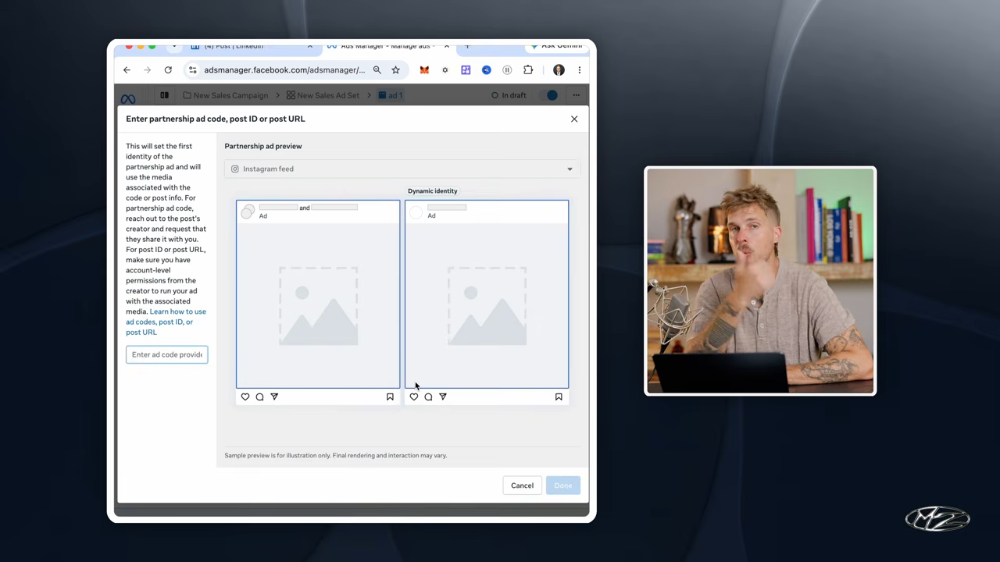
이렇게 돌린 광고는 일반 광고보다 성과가 훨씬 좋은 경우가 많아요. 광고의 30~50%를 화이트리스팅으로 돌리는 브랜드도 있다고 해요. 다크리스팅은 그 사람 계정 이름으로 나가지만 피드에는 올라가지 않는 광고예요. 오가닉 반응이 없어서 덜 유용하지만, 더 정교한 전술을 쓰는 곳이 활용해요.
관심을 매출로: 퍼널과 랜딩 페이지
발표자가 '돈을 버는 파트'라고 부르는 구간이에요. 소셜과 광고로 모은 관심을 어떻게 리드와 매출로 바꾸는지, 흔히 퍼널이라고 부르는 흐름을 다뤄요.
Your goal as marketing is not to do cool campaigns.
마케팅의 목표는 멋진 캠페인을 하는 게 아니에요.
— 영상 1:43:02
목표는 회사의 리드와 매출이에요. 측정을 피하려는 마케터 세대가 있었지만, 측정하고 증명할 줄 아는 사람이 제값을 받고 승진하고 창업도 한다고 해요. 디자이너가 되고 싶었던 발표자 자신도 오래 버텼는데, 하고 싶던 일들이 결국 이 흐름을 이해한 다음에 열렸다고 해요.
관심에서 매출까지, 한 장의 흐름
화이트보드 왼쪽 attention 아래에 ads, organic, referral, search, traffic이 적혀 있어요. 이 관심이 cta와 bio를 거쳐 가운데 landing page로 모여요. 거기서 위로는 Lead(email, phone), 아래로는 product를 거쳐 Sale로 갈라지고, 오른쪽 CRM(Customer Relationship Management)에 leads와 customers가 쌓여요. CRM 옆 동그라미의 touch, automation이 다음 단계로 이어지고, 아래 enablement에 speed to touch, close assets가, 왼쪽 아래 Metrics에 conversion rate, close rate가 적혀 있어요.
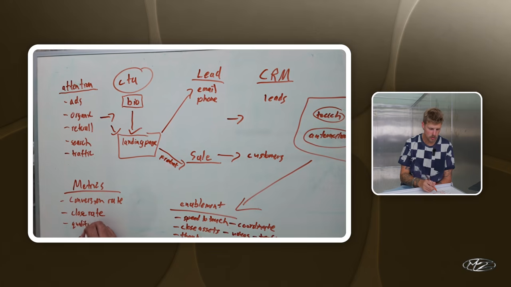
관심의 출처 중 추천은 누군가 회사를 권하는 것, 검색은 구글이나 ChatGPT에서 찾았을 때 우리 제품이 뜨는 것이에요. 매장 앞을 지나가는 사람도 관심이에요. 그 다음 이 사람들에게 무엇을 하라고 할지가 CTA예요. '지금 구매', '70% 할인', '대기 명단 등록', '무료 자료 받기', '무료 상담 신청'이 다 CTA예요.
소셜 프로필 소개글도 CTA를 담는 곳이에요. 발표자의 구조는 세 줄이에요. 첫 줄은 회사가 하는 일, 둘째 줄은 팔로우하면 얻는 것, 셋째 줄은 CTA예요. 발표자 본인은 '브랜드 전략 뉴스레터 구독'을 걸어 두고 구독자를 모아요.
랜딩 페이지 전환율이 비용을 정해요
CTA를 누르면 랜딩 페이지에 도착해요. 판매라면 대개 제품 상세 페이지예요. 처음엔 기본 페이지로 충분하고, 광고비가 수천~수만 달러로 커지고 타깃이 여럿이 되면 캠페인별 페이지를 따로 만들어요. 틱톡 인플루언서 캠페인용 페이지에는 그 인플루언서 영상을 넣는 식이에요. 발표자는 이 페이지가 마케터의 '자기 땅'이라며 숫자로 보여 줘요. 클릭당 1달러로 100명을 데려왔을 때 전환율에 따라 한 건당 비용이 이렇게 달라져요.
광고비 100달러로 방문자 100명 (클릭당 1달러)
전환한 사람 4명
한 명당 비용 25달러
- 영상의 기본값 4%에서 한 명당 25달러가 나오는지 보세요.
- 11~12%로 올려 보세요. 광고비는 그대로인데 한 명당 비용이 10달러 아래로 떨어져요. 발표자가 '훨씬 나은 수학'이라고 한 경우예요.
- 1%로 내려 보세요. 같은 광고로 한 명에 100달러가 들어요. 광고가 아니라 페이지를 고쳐야 하는 이유예요.
리드가 들어온 다음
리드는 CRM에 쌓여요. HubSpot이 대표적이고, 이커머스라면 Klaviyo 같은 이메일 도구가 그 역할을 해요. CRM 안에는 아직 사지 않은 리드와 이미 산 고객 두 종류가 있어요. 여기서 사람이 직접 연락하는 '접촉'과 자동으로 나가는 '자동화'가 시작돼요. 장바구니에 담고 나간 사람에게 가는 메일이 자동화예요. 리마인드, 추가 혜택처럼 여러 통이 이어지면 고급 자동화가 돼요.
마케터가 챙길 '지원' 세 가지는 이래요.
- 응대 속도: 상담이 필요한 상품이라면 리드가 들어오고 1분, 5분 안에 영업 사원이 연락해야 해요. 1분이 지날 때마다 응답할 확률이 떨어져요.
- 감사 페이지: 가입 직후 보는 페이지예요. 곧 전화할 사람이 직접 찍은 '구매 과정 안내' 영상을 두면 통화가 낯설지 않고, 오히려 기다려져요. 과소평가된 곳이라고 해요.
- 마무리 자료: 인기 영상, 후기 50개, 좋은 리뷰 모음, 자주 나오는 질문과 반박에 대한 답. 고객은 어차피 '사람들이 이거 어떻게 말해?'를 찾아볼 테니 먼저 건네요.
집착할 지표는 둘이에요. 랜딩 페이지 전환율과 리드 성사율이에요. 그 다음이 리드의 질, 즉 들어온 사람이 실제로 살 만한 사람인지예요. 영업 통화를 녹음해 요약하고 매주 나오는 반박을 모아 콘텐츠로 되돌리는 마케터는 아주 값지다고 해요.
좋은 랜딩 페이지는 질문을 미리 없애요
랜딩 페이지는 광고나 소셜에서 넘어온 사람을 홈페이지가 아닌 '전환하도록 설계한 페이지'로 보내는 거예요. 종류는 둘이에요. 혜택·후기로 바로 파는 제품형, 그리고 '이 룩을 만드는 14단계'처럼 정보를 먼저 주고 판매로 데려가는 리스티클형이에요.
발표자 친구의 선케어 보충제 브랜드 Sun Powder가 첫 예시예요. 왼쪽에는 90일 프로그램 구성과 무료 추가 혜택(피부 관리 책, 피부과 상담 커뮤니티, 거품기)이 가격과 함께 있어요. 가운데 카드는 'Made by dermatologists, backed by science' 아래 공동 창업자 두 피부과 의사와 스탠퍼드·하버드 이력을 보여 줘요.
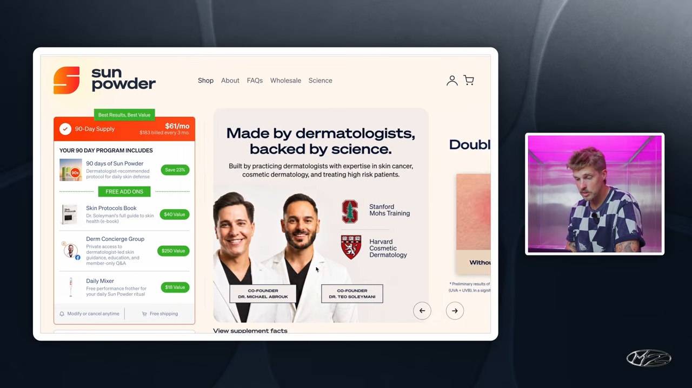
발표자는 이커머스 상세 페이지(PDP(Product Detail Page))를 많이 만들어 본 경험에서 순서를 정리해요. 화장품 브랜드 Rhode의 페이지가 예예요. 첫 화면 왼쪽은 라이프스타일 사진(영상도 섞여 있어요), 오른쪽은 제품 설명과 색상 선택, 그리고 'COMPLETE YOUR ROUTINE'으로 루틴 전체를 한 번에 담게 해요.
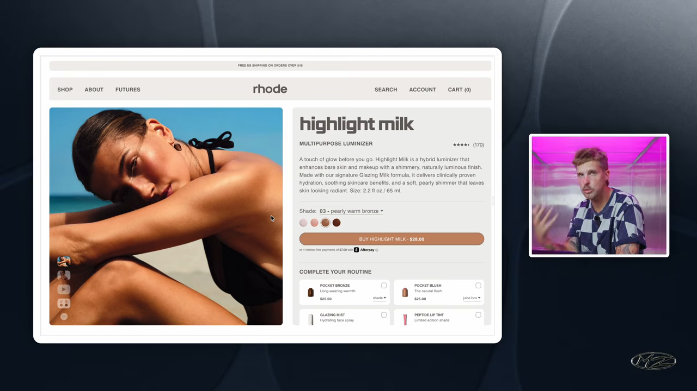
| 순서 | 섹션 | 왜 이 자리인가요 |
|---|---|---|
| 1 | 라이프스타일 사진·영상, 세트 구매 | 첫인상과 객단가를 함께 잡아요 |
| 2 | 실제 사람에게 쓴 모습 | 옵션마다 실제 결과를 보여 줘요 |
| 3 | 혜택 | 제품 기준이 아니라 사용자 기준으로. 어떤 느낌인지, 어떻게 보이는지 |
| 4 | 가치 제안 | 무엇이 다른지 |
| 5 | 사용법 | 쓰는 장면을 그리게 해요 |
| 6 | 성분 | 꼼꼼히 따지는 사람을 위해 |
| 7 | 데이터 | 임상 연구와 소비자 결과 |
| 8 | FAQ | 흔한 반박에 답해요 |
발표자는 PDP의 90%에 이 공식을 쓰라고 해요. 운동 반바지 브랜드 Ten Thousand는 기능마다(안감, 겉감, 주머니) 짧은 영상을 붙여 보여 줘요.
명품은 질문이 달라요. 5만 달러짜리 시계라면 '왜 이 돈을 내야 하나'에 답해야 해요. 그래서 일은 감탄하게 만드는 거예요. Jacob & Co의 페이지는 검은 화면에 시계 세 개와 'ASTRONOMIA REGULATOR'라는 큰 이름으로 시작하고, 디자인 영감과 스케치를 거쳐 개발 과정으로 내려가요.
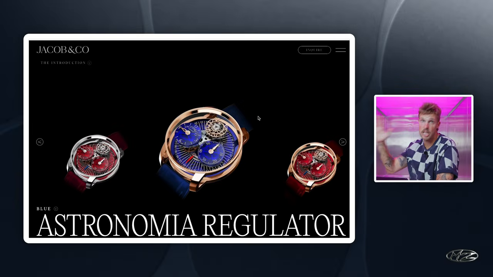
조금 내려가면 무브먼트 내부를 아주 가까이 찍은 고화질 영상이 나와요. 발표자는 이 지점쯤 오면 기능 설명이 나오기도 전에 '왜 이렇게 비싼지 알겠다'는 생각이 든다고 해요. 명품을 판다면 이런 접사 촬영에 시간을 들이라고 권해요.
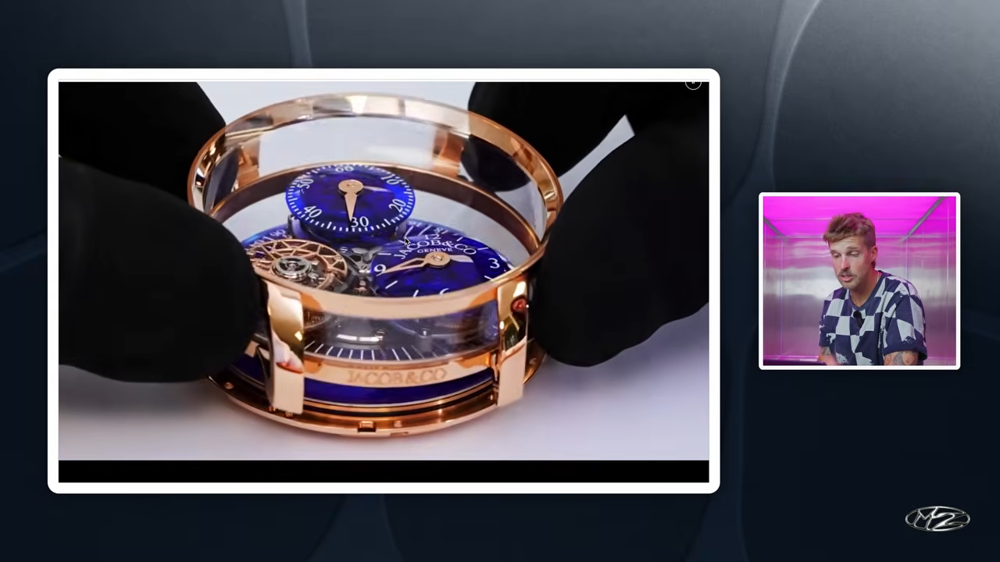
좋은 습관 하나도 알려 줘요. 광고를 누르거나 조사할 때마다 그 페이지의 섹션 순서를 적어 두는 거예요. AG1은 랜딩 페이지로 사업을 키운 브랜드예요. 첫 화면은 “It's AG1, now with creatine — and more.”라는 신제품 소개이고, 아래로 가면 제품 비교표, 목표별 안내, 고객 후기가 나와요. 이런 섹션을 모아 두면 '우리도 비교표를 넣어 볼까?' 하고 시험할 재료가 쌓여요.
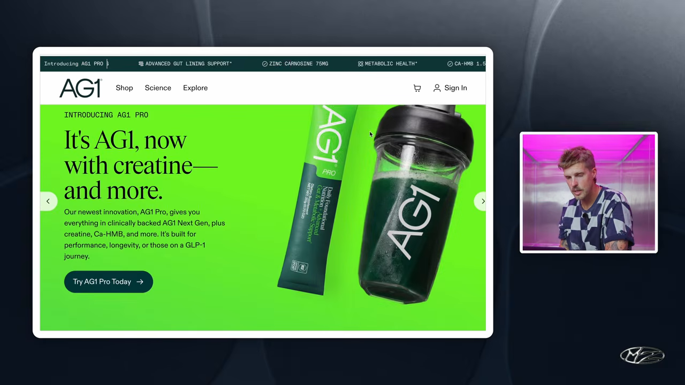
카피는 세 가지 목소리로 시험해 보라고 해요. 앞에서 본 다이렉트 리스폰스, 근거 중심, 이야기 중심이에요. 대상에 따라 듣고 싶은 말이 다르기 때문이에요. 페이지 제작은 AI 코딩 도구 Codex에 브랜드 색·버튼·이미지 규칙을 담은 '디자인 스킬'을 넣고, 문구와 이미지를 준 뒤 '조금 더 밝게', '모바일에서는 어때?'처럼 고쳐 가며 만들고 배포까지 한다고 보여 줘요.
전략 직무, 캠페인, PR
관심을 모으고 매출로 바꾸는 흐름을 갖췄다면, 다음은 내러티브예요. 리드와 고객, 시장과 오래 대화하는 방법이에요. 대부분 회사는 수요 흐름부터 잡아야 하고, 그게 돌아가기 시작하면 캠페인, 이메일, PR(Public Relations), 사내 소통을 더해요.
헷갈리기 쉬운 세 직무
발표자는 브랜드 전략, 크리에이티브 전략, 크리에이티브 디렉션이 마구 섞여 쓰인다며 선을 그어요.
| 직무 | 다루는 것 | 시간 단위 |
|---|---|---|
| 브랜드 전략 | 포지셔닝, 시험할 메시지, 톤, 큰 방향. '인플루언서에 집중할까, 매장 지원에 돈을 더 쓸까' 같은 질문 | 캠페인, 분기, 1~2년 |
| 크리에이티브 스트래티지스트 | 광고 계정(또는 오가닉 계정)에 넣을 새 콘셉트, 훅 각도, 메시지를 짜고 브리프로 나눠 줘요 | 매주 |
| 크리에이티브 디렉터 | 캠페인 비전과 시각 아이디어, 매장 연출, 패키지 개편을 이끌어요. 직접 촬영·스타일링·디자인도 할 수 있어요 | 캠페인 단위 |
크리에이티브 스트래티지스트를 설명하는 슬라이드예요. 위쪽 'Come Up With Angles'와 'Write The Briefs'가 이 직무의 두 가지 일이고, 아래 'Creators', 'DESIGNERS', 'TEAM MEMBERS'가 브리프를 받아 실행하는 사람들이에요.
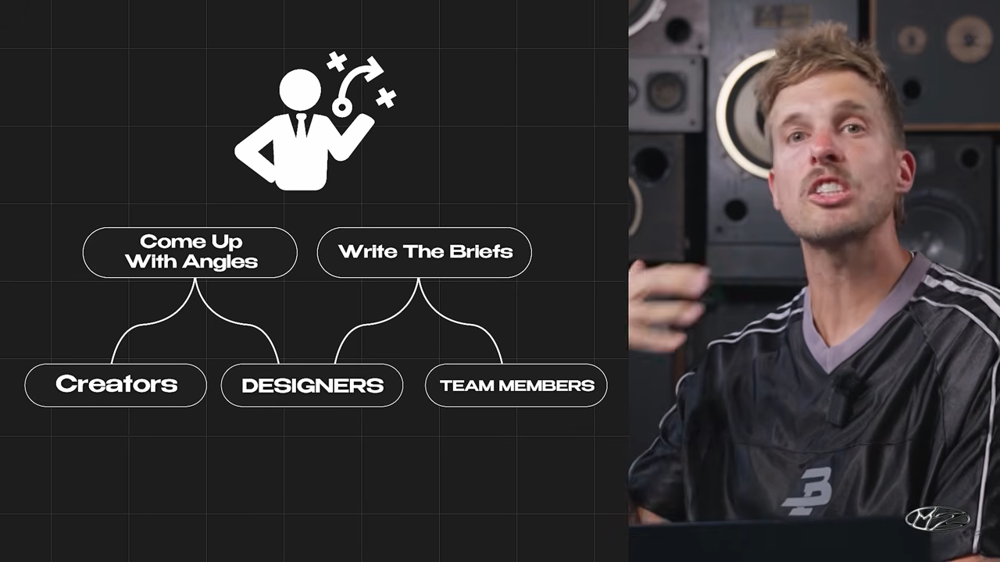
크리에이티브 디렉터는 많은 사람이 꿈꾸는 자리예요. 발표자는 그 조건으로 두 가지를 들어요. 사진·영상·스타일링·디자인을 웬만큼 다 할 줄 알아서 누가 펑크를 내도 직접 메울 수 있어야 해요. 그리고 '이 사진가, 이 인플루언서라면 일주일 안에 예산보다 싸게 해 줄 거야'라고 부를 수 있는 인맥이 있어야 해요. 다른 정의들은 지금 채용 시장에서는 낡았다고 봐요.
캠페인: 한 시점에 모든 채널을 하나로
캠페인은 특정 시점에 하나의 아이디어로 브랜드의 세계 전체를 묶는 거예요. 자체 채널(소셜, 창업자, 이메일)과 외부 채널(파트너, 유통사, 인플루언서)이 같은 출시를 동시에 이야기하면, 어느 한 사람보다 큰 순간이 돼요.
운동복 브랜드 Set Active의 인스타그램이 대표 예예요. 화면 아래쪽 대관람차와 'SET' 간판, 빨간 줄무늬 옷의 사진들이 '주 박람회' 캠페인이고, 위쪽 파스타 접시와 이탈리아 골목 사진은 그 다음 '이탈리아 휴가' 캠페인이에요. 캠페인과 캠페인 사이에 빈틈이 거의 없어요.
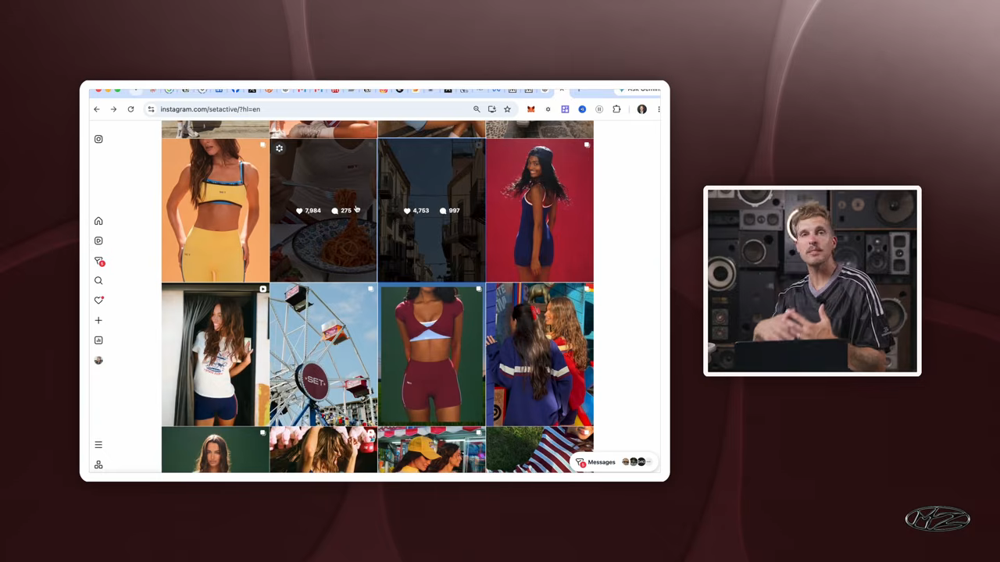
규모가 커지면 '앵커'를 세워요. 필리핀 브랜드 Sunnies Face는 향수를 내면서 큰 인플루언서를 캠페인의 얼굴로 세웠어요. 화면은 그 인플루언서(lizasoberano 계정)가 분홍 향수병을 든 게시물로, 브랜드 계정과 본인 계정이 함께 올렸고 좋아요가 11만 3천 개예요. 새 카테고리에 들어갈 때 큰 얼굴에 돈을 더 쓰고, 그 뒤를 좋은 소재로 받쳐요.
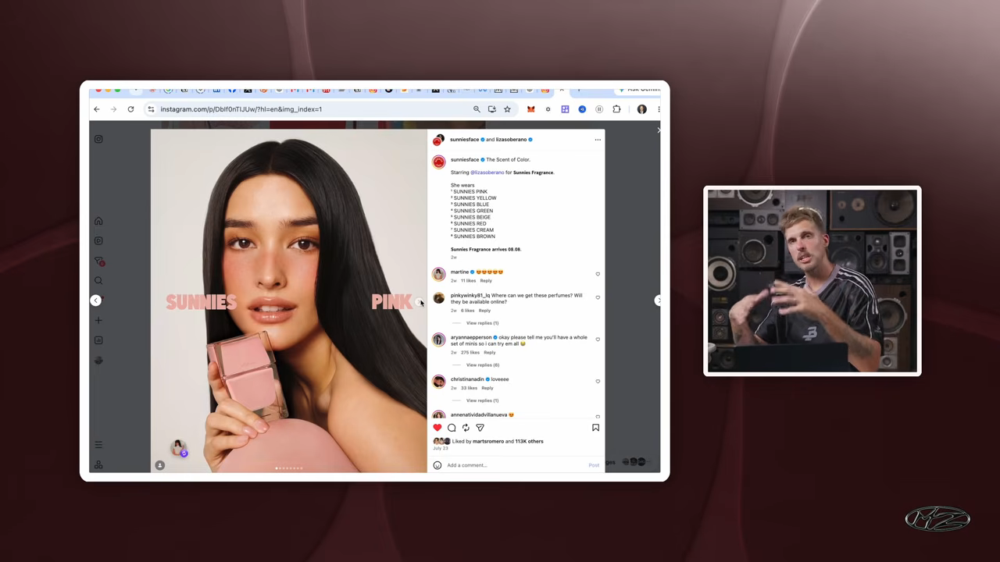
소프트웨어 회사도 캠페인을 해요. Shopify Editions가 예예요. 1년에 한두 번 신기능을 몰아서 발표하면서 전용 마이크로사이트, 기능별 설명 영상, 큰 행사 생중계, 워크숍을 한꺼번에 내요. 화면은 2026년 봄 에디션 페이지로, 'Sidekick works with your apps'라는 신기능 소개가 보여요. 발표자도 인플루언서로 이 발표에 참여해요.
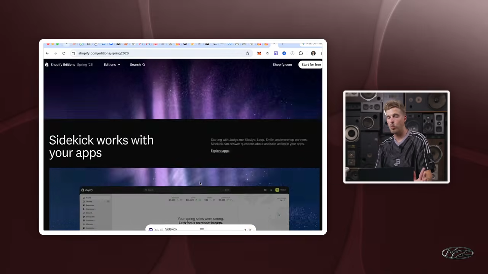
해마다 하나의 주제를 정하는 연간 캠페인도 있어요. Equinox는 그 해의 주제 문구로 작품을 만들어 매장 외벽과 소셜에 걸어요.
PR은 이제 '위기 대응'이 핵심이에요
기자가 제품 기사를 써 주는 전통적인 PR은 예전 효과의 일부밖에 못 낸다고 봐요. 발표자도, 아내도 이 분야에서 일했지만 대개는 들이는 시간과 돈만큼 가치가 없다고 해요. 대신 공격받을 때 메시지를 짜는 능력은 그 어느 때보다 중요해졌어요. Equinox가 AI로 만든 캠페인이 아시아 여성을 묘사한 방식 때문에 비판받은 일을 예로 들어요. 맞설지, 사과할지, 각각 어떤 후폭풍이 올지 판단해야 해요. 시작점으로 AI에게 '위기 PR 담당자라면 우리 상황에서 어떤 선택지가 있을까'를 묻고, 사람의 눈으로 반응을 미리 역할극해 보라고 해요.
이메일과 SMS
발표자는 이 주제로 영상을 따로 만들면 아무도 안 누를 거라며 웃어요. 화려하지 않거든요. 그래도 가장 좋아하는 주제라고 해요. 디자이너에서 마케터로 넘어가던 시절, 멘토가 '마케팅 자동화 자격증을 따라. 그러면 평생 연봉 걱정은 없을 거다'라고 했대요. 당시 쓰던 Eloqua의 강의를 다 들었고, 지루해 보이던 자동화가 회사 안에서 얼마나 쓸모 있는지 알게 됐다고 해요. AI 덕분에 지금은 더 쉬워졌고, 디자이너라면 그 안에서 크리에이티브 감각도 쓸 수 있어요.
캠페인과 플로우
먼저 두 용어를 구분해요. 캠페인은 한 번씩 보내는 메일이에요. 플로우는 고객의 행동에 따라 자동으로 나가는 연속 메일이에요.
다른 브랜드가 보낸 메일은 Milled에서 모아 볼 수 있어요. 무료 계정으로 Reformation을 연 화면이에요. 8월 한 달 메일이 “SALE'S 50% OFF”, 'ARCHIVES -50%', 'SHOP 30% OFF', 'NICHE INTERESTS'처럼 날짜별로 줄지어 있어요. “SALE'S COMING”과 'LES ARCHIVES ARRIVENT'처럼 사진은 같고 글자만 다른 쌍은 두 버전을 비교하는 테스트이거나 다른 고객 묶음(프랑스어 목록)에 보낸 거예요.
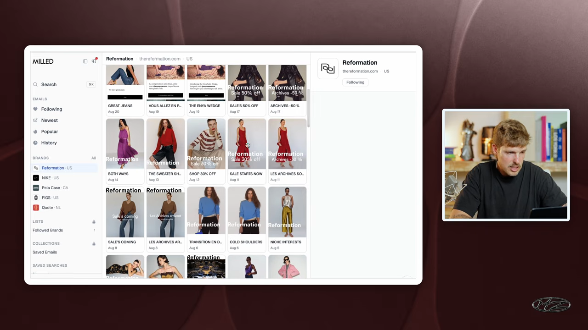
발표자는 대부분 브랜드에 주 1~3통을 권해요. 매일 할인 메일을 보내는 브랜드도 숫자는 내지만, 구독 해지가 끊임없이 생겨서 힘든 길이라고 해요.
플로우는 Klaviyo 화면으로 보여 줘요. 이커머스에서 가장 많이 쓰는 도구예요. 'New Lead Welcome' 플로우는 맨 위 Trigger(누군가 구독자 목록에 추가되면) → Email #1 'Howdy Y'all' → Wait 2 days → Email #2 'Best Sellers' 순서로 내려가요. 그 아래로 유명인이 입은 사진 같은 증거 메일, 그 다음 할인 제안이 이어진다고 해요.
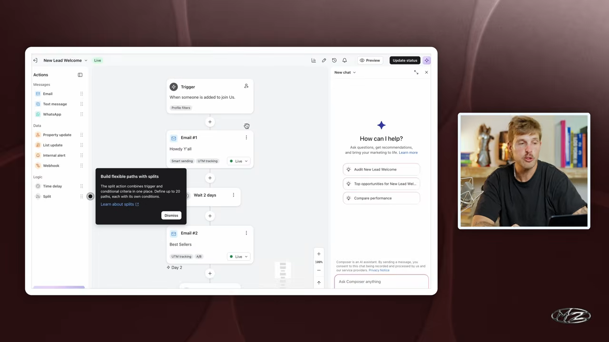
매주 보낼 캠페인 메일 재료
Rhode는 아트 디렉션이 강한 메일을 보내요. 화면의 'Bikini to mini' 메일은 '하루, 두 가지 룩'이라는 부제로 인플루언서 한 명의 하루를 따라가며 사진을 보여 주고, 제품은 살짝만 드러내요. 인플루언서와 영상 작업을 할 때 사진 몇 장을 더 받아 메일에 쓰는 거예요.
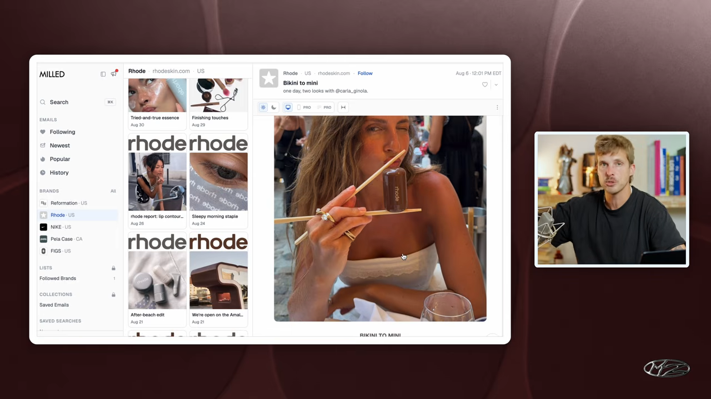
| 메일 유형 | 내용 |
|---|---|
| 콘텐츠 보여 주기 | 이미 만든 영상·캐러셀을 메일로 옮기고 설명을 조금 더해요. 가장 쉬운 승리예요 |
| 신제품·새 기능 | 소프트웨어라면 '추가했다'가 아니라 왜 추가했는지 보여 줘요 |
| 커뮤니티 | 고객이 우리 제품을 쓰는 모습, 온라인의 반응을 모아요 |
| 회사 근황 | '안녕하세요, 줄리예요' 같은 사람 목소리로 이번 주 소식과 무드보드를 전해요 |
| 함께 쓰면 좋은 것 | 팬을 판다면 그 팬으로 만들 요리와 어울리는 주걱. 여행 짐 목록도 좋아요 |
| 업계·큐레이션 | 분야 소식이나 창업자가 좋아하는 것들. 이런 메일로 브랜드가 생긴 경우도 있어요 |
| FAQ | 영업 통화나 소셜에서 자주 나온 질문에 답해요 |
| 할인 | 기간 한정 혜택 |
할인 메일이 가장 잘 팔려요. 하지만 할인만 보내면 할인 메일만 열어요. 다양한 이유로 열어 보게 섞으라고 해요.
디자인은 생각보다 단순해도 돼요. Milled의 Popular 탭에서 연 AG1 메일이 예예요. 오른쪽 메일은 'One simple pack to fit into your packed schedule'이라는 카드 하나에 사진 한 장, 버튼 하나뿐이에요. 발표자는 카드 두세 장이면 메일 한 통이 된다고 해요.
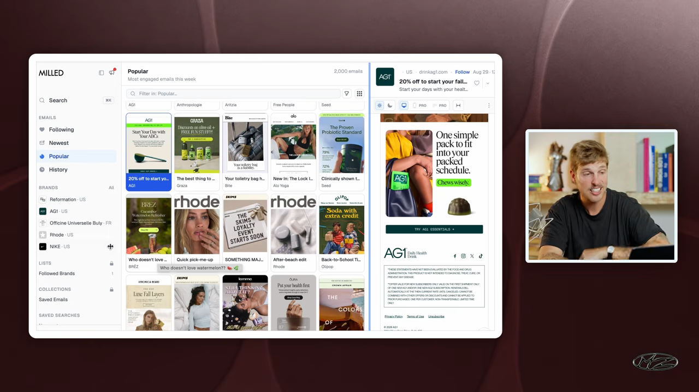
작은 회사나 서비스 사업이라면 회사 이름 대신 사람 이름으로 보내라는 팁도 있어요. 프리미엄 웹사이트를 팔던 회사에서 창업자 이름의 텍스트 메일로 바꾸자, 받는 사람이 바로 답장하며 대표와 대화를 시작했다고 해요.
꼭 만들어 둘 플로우
Klaviyo, Kit, beehiiv 모두 템플릿이 있어요. 가장 중요한 건 넷이에요. 가입하면 몇 주에 걸쳐 가는 환영, 장바구니에 담고 나간 사람에게 가는 장바구니 이탈, 상품만 보고 나간 구독자에게 가는 둘러보기 이탈, 그리고 두 번째 구매·1주년 같은 재구매 플로우예요.
둘러보기 이탈 플로우는 이렇게 생겼어요. 맨 위 Trigger 'When someone Viewed Product' → Wait 2 hours → Conditional split으로 갈라지고, 오른쪽 No 쪽에 'Did you see something you liked?' 메일이 있어요. 발표자는 이 갈림길에서 전화번호가 있으면 문자, 없으면 메일을 보내게 설정한다고 설명해요.
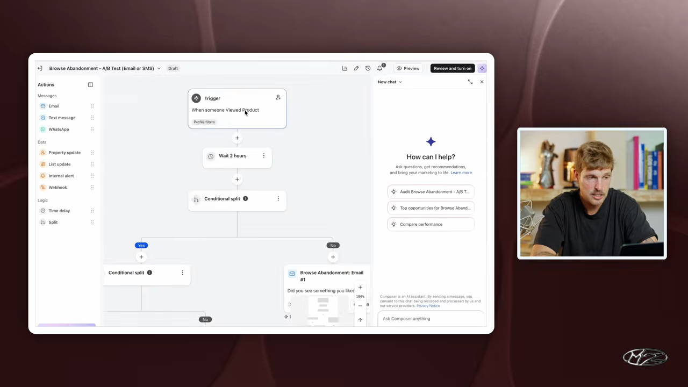
매주의 리듬과 세그먼트
월요일에 지난주를 돌아봐요. 무슨 콘텐츠를 올렸는지, 커뮤니티에서 무엇이 나왔는지, 회사에 무슨 일이 있었는지, 영업 통화에서 어떤 반박이 나왔는지요. 그중 무엇을 텍스트 메일로 쓰고 무엇을 디자인할지 나누고, 일정에 넣어요. 새로 만들 필요 없이 이미 한 일이 재료가 돼요.
조금 더 나아가면 세그먼트예요. 발표자가 맡았던 뷰티 브랜드는 고객을 묶어 보니 Z세대, 중년 라틴계 여성, 그리고 영어가 모국어가 아닌 7%가 있었어요. 그래서 7%에게는 스페인어 메일을, Z세대와 중년층에게는 다른 메시지를 보냈어요. 50개로 쪼갤 필요는 없어요. 열람률과 전환율을 크게 바꿀 큰 묶음 몇 개면 돼요. 여러 번 열어 본 사람, 링크를 누른 사람처럼 행동으로도 묶을 수 있어요.
AI도 붙여요. Klaviyo를 ChatGPT에 MCP로 연결하면 주간 회의에서 '플로우를 어떻게 개선할까', '새 페르소나로 세그먼트를 만들까'를 데이터를 직접 뒤지지 않고 물어볼 수 있어요.
제품을 팔지 않는다면
이커머스가 아니라면 ConvertKit이나 beehiiv가 좋다고 해요. 가입 폼이 있는 간단한 페이지를 만들어 주고, 디자인보다 텍스트 메일 중심이에요. 발표자는 큰 브랜드라도 텍스트 메일을 좋아해요. 읽고 누르는 게 더 자연스럽게 느껴지거든요. 내용의 원리는 같아요. 건설사라면 '새 현장 진행 상황', '새 장비', '팀원 소개', '새 자격 취득'을 보내면 돼요. 주 1회면 충분하고, 한 달에 한 번도 안 보내는 것보다 나아요.
영업팀을 돕는 마케팅
발표자는 PR보다 이쪽에 시간을 쓰라고 해요. 마케팅이 영업팀을 어떻게 돕느냐예요. 규칙은 단순해요. 돈에 가까울수록 몸값이 올라요. 크리에이티브 스트래티지스트가 고연봉 직무가 된 것도 광고 매출에 가깝기 때문이고, 영업 지원도 마찬가지예요.
영업팀의 모습은 회사마다 달라요. 제품 회사라면 유통사에 입점시키는 영업팀이 있어요. 이때 마케팅은 매대에서 제품이 팔리게 돕는 이야기를 만들어요. 서비스 회사처럼 리드가 들어오고 영업 사원이 전화하는 곳이라면, 마케팅이 영업 성과에 훨씬 직접적으로 영향을 줘요.
리드와 CRM
리드는 회사에 정보를 요청해서 영업 사원이 고객으로 바꾸려는 사람이에요. 도매 플랫폼에서 시험 주문을 넣은 매장일 수도 있고, 상담 신청 폼을 채운 사람일 수도 있어요. 리드는 CRM에 기록돼요. 언제 들어왔는지, 담당자가 누구인지, 몇 번 연락했는지, 성사 가능성과 회사 규모가 다 쌓여요.
단계마다 필요한 영업 자료
마케팅이 할 가장 중요한 일은 영업 자료예요. 발표자는 단계별로 나눠 설명해요.
담을 내용은 이래요.
- FAQ와 반박 답변: 소셜과 고객 지원팀에서 자주 듣는 질문에 PDF(Portable Document Format), 메일 문구, 대표가 직접 답하는 영상으로 답해요.
- 후기와 사례 연구: 좋은 리뷰를 모으고, 고객의 성공 사례를 한 장짜리 PDF로 만들어요.
- 반응 좋은 콘텐츠: 요즘 터진 영상이나 인플루언서 캠페인. 유통사는 '사람들이 찾게 될 브랜드'인지 보고 싶어 해요. 발표자는 매주 가장 뜨거운 콘텐츠를 영업 사원에게 쥐여 줬다고 해요.
- 데이터와 인포그래픽: 업계 흐름, 고객 결과, '우리 방식은 이만큼 아낀다' 같은 숫자.
- 경쟁 비교: 고객은 어차피 비교해요. 다른 CRM, 다른 SEO(Search Engine Optimization) 업체와 무엇이 다른지 한 장으로요.
이 자료들은 서로 돌아가요. 좋은 후기 영상은 이메일 플로우에도, 광고 소재에도 쓸 수 있어요. 발표자가 Gel Blaster에서 마케팅을 이끌 때는 디자인팀이 마케팅 아래 있었어요. 영업팀이 프로젝트 관리 도구 ClickUp의 신청 폼으로 자료를 요청하면 디자이너에게 배정되고, 정기 회의에서 검토하는 흐름이었어요.
리드를 끝까지 살리기
리드 관리는 원래 마케팅 책임이 아닐 수 있어요. 그래도 마케팅이 만든 리드를 영업이 얼마나 성사시키느냐가 내 일의 가치를 정해요. 그래서 세 가지를 챙기라고 해요.
- 응대 속도: 웨비나 직후 60초 안에 전화가 오면 아직 관심이 뜨거워요. 이틀 뒤면 '무슨 웨비나였죠?'가 돼요.
- 접촉 횟수: 발표자가 평균 주문액 9천 달러쯤인 고가 아웃도어 제품을 팔 때 재 보니, 1~2번째에 바로 사거나 11번째 접촉에서 가장 많이 샀어요. 그래서 '세 번째 메일, 다섯 번째 메일에는 무엇을 보낼지'를 영업팀에 준비해 줬어요. 노동절, 사냥 시즌처럼 그 업계에 맞는 연락 이유도요.
- 선별: 직원들이 링크드인에서 활동한다면, 반응하거나 팔로우한 사람 중 이상적인 고객에 맞는 사람을 슬랙 채널로 영업팀에 넘겨요. 북서부의 지붕 공사 회사라면 그 지역에 사는 팔로워에게 '새 지붕 생각 있으세요?'라고 메시지를 보내는 식이에요.
영업팀을 돕기 시작하면 영업 리더들의 마케팅을 보는 태도가 확 달라지고, 내 다른 기획도 승인받기 쉬워진다고 해요. 조직이 이해하지 못한다면 가장 의욕 넘치는 영업 사원 한 명과 손잡으라고 해요. 가장 잘하는 사람은 다루기 까다로운 경우가 많아서, 커미션이 간절한 사람이 더 좋은 파트너래요.
영업 통화 녹음이 최고의 재료예요
마지막 팁이에요. 영업 통화를 녹음하고 Granola, Fathom 같은 도구로 요약하게 해요. 그 요약을 AI에 넣고 '어떤 반박에 대응하는 콘텐츠를 만들어야 할까', '웹사이트 문구와 비교해 어떤 고객 고민을 더 강조해야 할까'를 물어요. 예전에는 수백 시간을 들여 손으로 하던 일이에요. 발표자는 화려한 자동화보다 이게 훨씬 강력하다고 봐요.
캠페인 설계와 주간 보고
마지막은 모든 걸 하나로 묶는 두 가지예요. 캠페인을 처음부터 끝까지 설계하는 법, 그리고 마케팅이 하는 일을 회사 안에 알리는 법이에요.
캠페인 지도 그리기
화이트보드 왼쪽 stages 아래에 teaser, campaign, unveil, sustain, refresh가 있어요. 가운데 internal 열에는 social, emails/sms, website, physical, ads가, 오른쪽 external 열에는 partners, retailers, influencers, pr가 있고, 둘을 더하면(+) campaign이 된다고 적혀 있어요. 아래 feedback 화살표는 sustain으로 되돌아가고, 오른쪽 끝에는 그 다음 할 일(포지션·아이디어 → 소재 목록 → 일정·담당자 → 역산 일정)이 세로로 적혀 있어요.
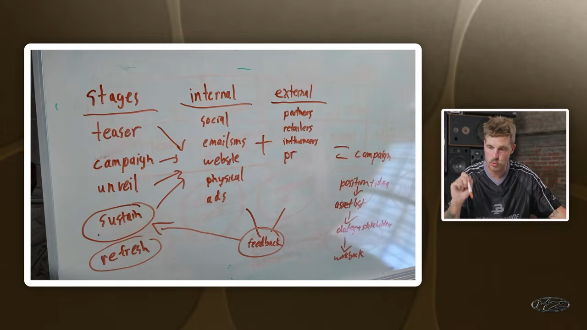
- 티저: 발표 전에 기대를 만들어요. 소셜 티저, 대기 명단 광고, 매장의 '곧 출시' 안내, 웹사이트 팝업, 출시 행사 초대 메일.
- 캠페인: 큰 영상과 핵심 소재를 내고 웹사이트와 메일로 퍼뜨려요.
- 언베일: 사람들이 제품 전체를 처음 자세히 보는 순간이에요. 이 '둘러보기' 소재는 상품 페이지에 두기 가장 좋고, 기존 타깃 광고에서도 성과가 좋아요.
- 지속: 긴 여름 캠페인이라면 계속 소재를 더해요. 앞 단계에서 들어온 피드백, 질문, 아이디어를 반영해요. 6개월쯤 지나 또 팔아야 하면 '리프레시' 단계를 한 번 더 해요.
발표자가 가장 강조하는 건 외부 채널이에요. 다들 내부 채널만 챙기는데, 파트너 회사도 같은 시기에 홍보해 주는지, 유통사는 어떻게 알리는지, 인플루언서와 크리에이터가 붙는지, 시딩은 하는지, 잡지나 업계지, 팟캐스트는 어떤지까지 봐야 해요. 칸을 채운 다음에는 포지션과 아이디어를 정하고, 소재 목록을 뽑고, 소재마다 날짜와 담당자를 붙이고, 마감일부터 거꾸로 일정을 짜요. 이 캠페인들을 처음에 그린 브랜드 월드 달력에 얹으면 1년 계획이 돼요.
매주 위로 보고하기
마케팅은 가장자리에서 일어나는 일이 많아서, 모르는 사람에게 설명하기 어려워요. 그런데 회사가 마케팅팀에 바라는 건 세 가지예요. 무엇을 하는지 알고 있다는 안심, 측정 가능한 ROI(Return On Investment), 그리고 신경 쓰고 있다는 느낌이요. 그래서 발표자의 첫 번째 추천은 직급과 상관없이 매주 위로 보고하는 거예요.
- 성과: 잘 된 건 스스로 알리지 않으면 아무도 몰라요. '이 게시물이 예상보다 잘 됐어요', '온라인 매출이 예상보다 많았어요'.
- 다음 우선순위: 다른 부서가 끼어들 일이 있으면 미리 조율할 수 있어요.
- 막힌 일: 누구를 기다리는지, 무슨 결정이 필요한지 미리 적어 두면 막판에 '왜 안 됐냐'가 '2주 전에 말씀드렸어요'로 바뀌어요.
- 숫자: Meta 광고 ROAS, 이메일 성과, 리드 수, 조회수 같은 KPI(Key Performance Indicator)를 매주 붙여요. 앞에서 본 AI 연결로 뽑으면 금방이에요.
팀을 이끌 때도 같았어요. 발표자는 디자인, 콘텐츠, 이커머스, 광고 집행, 현장 이벤트 팀장들에게서 이 보고를 받았어요. 그중 가장 큰 성과와 막힌 일, 중요한 숫자를 골라 경영진에게 올렸어요. 경영진은 거의 질문하지 않았다고 해요. 언제든 확인할 수 있었으니까요. 막힌 일을 올리면 팀원을 대신해 목소리를 낼 수도 있어요. 일주일에 메일 한 통이 마케팅 경력을 바꾼다고 말해요.
이제 직접 해 볼 차례
발표자는 영상에서 한 연습을 실제로 해 보라며 마무리해요. 내 브랜드나 고객, 친구 브랜드로요.
- 브랜드 월드 화이트보드 그리기
- 관심 → 매출 흐름을 영업팀과 함께 그리기
- 소셜 운영 방식(전문가형, 이야기형, 아트 디렉션형) 하나 고르기
- 내 제품의 랜딩 페이지 하나 만들기
- 회사 브랜드용 AI 프로젝트 만들기